Liferay DXP + AI 编码代理 — 实操教程
项目：Aurelis Energy —「Aurelis One」数字平台（第 1 批次）
受众：在此工作区中借助其技能集使用 Claude Code 的 Liferay 集成商
⚠️ 重要：提示词只是工作的开始，而非结束。发送提示词并不意味着练习已经完成。AI 代理要求您澄清或确认，并由此展开一段对话，这很正常，也在预料之中。因此，请仔细阅读代理的回复，包括其中间进度消息，并尽力引导它；如果它偏离了方向，甚至可以中止它。AI 代理非常擅长串联嵌套任务，但要确保它们所做的工作真正有用，您的作用不可或缺。 掌握方向盘的是您！
您将构建的内容
完成本教程后，您将拥有 Aurelis Energy 数字平台的一个可运行切片，它完全基于 Liferay DXP 端到端构建，大部分代码由 AI 编码代理在您的指挥下编写：一个带评分的账户管道、一套真实的内容运营流程（CMS + 营销活动规划）、一个需填写表单才能获取内容的潜在客户获取漏斗、一个定制的太阳能/储能电池模拟器、两个 AI Hub 聊天机器人（先是原生的，然后是定制的）、基于等级的合作伙伴权限，以及一个将所有内容整合进 Digital Sales Room 的综合项目：先由销售人员开启房间，再根据客户保存的模拟结果自动生成房间。
共十个级别，每一级都建立在上一级的基础上 — 您不必回头重做已完成的内容。下面的每个练习都会告诉您：要构建什么、由哪个技能驱动、需要执行的具体步骤或提示词、在哪里截图，以及如何验证它真正生效（而不仅仅是某条命令以 0 退出）。
AI 在这里的角色。您指挥，Claude 执行。您提出需求，审查它的方案，并独立验证结果 — 每个练习都以自己的验证步骤结尾，正是为了在虚构的端点或错误的假设成为下一个练习的基础之前将其发现。
如果 Claude 卡住了。这可能适用于您在本次研讨会中要做的工作，但更可能适用于您今后的探索。此工作区中的技能内容丰富，但并非万无一失 — 在较复杂的步骤上，偶尔走错路是可以预期的。如果某个步骤明显在原地打转（同样的调用反复失败，毫无进展），请中止它，询问它刚才尝试了什么，然后重新引导。如果它确实卡在一个无法猜出的结构上，请先在 Liferay UI 中亲自构建一个可运行的示例（页面、片段或对象），再让 Claude 去检查它（例如导出 .lar、捕获 API 响应、进行监控），而不是用文字描述目标。当您找到值得保留的修复方法时，请将其写回负责该步骤的技能（.claude/skills/<skill>/SKILL.md）或对应的 .claude/rules/*.md 参考卡片，并注明您验证时所用的 DXP 版本。也可以让 Claude 替您完成，这样下一个会话就无需重新摸索。
本练习手册是借助 Claude Code 编写的，它是一个能力相当强的代理。例如，当它卡住时，它能够反编译 Liferay 的 jar 包来找出正确的 Json 结构。但这类额外工作会消耗大量令牌（token）。因此，记录有用的发现非常重要，这样它下次遇到类似挑战时，就有一份现成的解决方案可用。
如何使用本教程
- 每个练习一个简短的 Claude 会话（偶尔是一小组练习），而不是用一个长会话承载整个项目。练习 0.1 会创建两个文件 —
solution-context.md和solution-index.yaml— 正是为了让每个新会话都能立即完成初始化，而无需重新阅读所有内容。 - 每当您启动新的 Claude Code 会话时，其技能都知道如何读取这些文件，因此您无需从头重新解释 Aurelis 和您的进度。
- 在每个练习结束时，技能会同步更新
solution-index.yaml，并将刚刚构建的内容标记为done— 这样下一个会话就能准确了解「还剩什么」。
为什么要使用简短的 Claude 会话？我们观察到，随着上下文窗口不断增长（例如经过一段很长的对话），令牌用量会增加，而准确性往往会同时下降。因此，我们提出了这种组织知识和工作完成进度的方案。在您自己的项目中，您甚至可以将 Claude Code 与 Jira 项目连接起来。
-
每个创建内容、表单、页面或对象的提示词都以「Access expectations」（访问要求）结尾。它告诉 Claude 谁必须能够读取或写入什么、访客不得做什么，以及以哪个用户身份进行验证。权限缺口会静默失败：页面返回 200，表单正常保存，在管理员看来一切正常。预先说明访问要求，可以让 Claude 第一次就构建并测试正确的访问权限，而不是由您日后才发现缺口。在改编提示词时请保留这些内容，并为您新增的任何提示词写上一条。
-
全文使用的图例：
| 标记 | 含义 |
|---|---|
| 🎯 | 您将构建的内容 |
| 🧩 | 驱动本练习的技能（🆕 = 在此工作区中新增，不属于 Liferay 官方技能集） |
| 📋 | 需遵循的步骤 |
| 💬 | 要粘贴到 Claude 中的提示词 |
| 📸 | 在此处截图 |
| ✅ | 如何验证其已生效 |
| ⚠️ | 开始之前值得了解的陷阱 |
基线 — 已有内容
在练习 0.1 之前，工作区中已包含：
- 一个站点初始化程序（
client-extensions/<name>/site-initializer/） - 一个基线片段库
- 一个样式手册（style book）
- 一个母版页
- 一个首页
- Glowroot（APM），已预装：代理程序位于
configs/common/glowroot/，configs/common/tomcat/bin/setenv.*将其挂载到 Tomcat（始终开启），.mcp.json注册了它的 MCP 服务器。用于练习 6.3。 - 4 GB 堆内存供 Liferay 使用，在同一组
setenv.*文件中设置（该 bundle 的默认值为 2.5 GB）。
这些内容都不会重建 — 练习 0.5 是对它们的导览，而不是重新创建。
本教程中使用的技能
这些技能的来源
Liferay 在 Liferay Portal 代码仓库中发布了一套官方 AI 代理技能：workspaces/liferay-sample-workspace/.agents。其中包含 24 个技能（skills/）、8 张参考卡片（rules/）以及一个规则入口文件（liferay-rules.md）。
您在本练习手册中使用的工作区以这套官方技能为起点，并做了进一步扩展：
- 🆕 新增：8 个官方技能集中没有的技能。它们涵盖本练习手册所需的产品和模式：CMS、CMP、Data Sets、Form Containers、AI Hub、Liferay Data Platform 分析、Glowroot 性能诊断，以及 Digital Sales Room 自动化。
- ✏️ 增强：18 个官方技能，补充了在编写本练习手册过程中实际验证过的发现（静默失败、特定版本的行为、任何 OpenAPI 规范都未记录的结构）。
- ⚪ 未改动：4 个官方技能，按原样使用。
- 未包含：官方的
author-skill和commit-skill，它们用于维护官方技能集本身。
在这里，所有内容都位于 .claude/ 下：CLAUDE.md（入口文件和技能路由）、skills/<name>/SKILL.md，以及 rules/（与官方技能集相同的 8 张参考卡片）。以下对比基于 2026-10-05 官方代码仓库的 master 分支。
所有技能（按来源）
| 技能 | 来源 | 相比官方技能集新增的内容 | 练习 |
|---|---|---|---|
manage-cms |
🆕 新增 | CMS Spaces、Content Structures、条目和文件夹；将 Space 连接到站点以呈现其内容 | 3.1, 7.2 |
manage-cmp-campaigns |
🆕 新增 | CMP 项目（营销活动）和任务、负责人、截止日期 | 3.4 |
manage-data-sets |
🆕 新增 | Data Set 定义（列、筛选、排序、行操作）以及放置 Data Set 片段 | 4.3 |
manage-form-containers |
🆕 新增 | 创建或编辑对象条目的原生 Form Containers、成功后重定向、隐藏的上下文字段 | 4.1, 5.1 |
manage-ai-hub |
🆕 新增 | 将 DXP 连接到 AI Hub、代理回调 DXP（HTTP Request、基于 Search Blueprints 的 RAG）、页面上的聊天机器人、Cell on-behalf-of 身份验证 | 3.3, 7.2, 7.3, 9.1, 9.2 |
manage-analytics |
🆕 新增 | 将 DXP 连接到 Liferay Data Platform、Analytics.track() 自定义事件、实时细分、检查事件是否送达 |
4.1, 4.2, 9.1, 9.2 |
glowroot-performance |
🆕 新增 | 使用 Glowroot APM 进行性能诊断 | 6.3 |
manage-dsr |
🆕 新增 | 通过 REST 以 DSRRoom 条目形式创建房间、打包为 OSGi 模块的自定义房间模板、房间成员、限定在房间站点范围内的数据 |
8.2 |
workspace-init |
✏️ 增强 | 先释放 8080 端口；功能标志与管理员首次启动的关系 | 0.2 |
mcp-server |
✏️ 增强 | 2026.Q3 的 Instance Settings 开关；MCP 工具集因版本而异；Windows 上的 Claude Code 以访客身份调用 | 1.1 |
feature-flags |
✏️ 增强 | 无需重启的运行时开关；Deprecation/Developer 标志会忽略 portal-ext.properties |
1.2 |
deploy-and-verify |
✏️ 增强 | 重启遵循 CLAUDE.md 中的会话重启策略 |
1.3 及之后的每次部署 |
manage-objects |
✏️ 增强 | 字段 ERC、选择列表键规则、扩展 Account 等系统对象、Aggregation 字段 | 2.1, 2.2, 2.3, 7.3, 8.2 |
manage-object-logic |
✏️ 增强 | 真正生效的工作流关联、Single Approver 复制陷阱、访客提交、HSQLDB 死锁 | 2.4, 8.2 |
manage-pages |
✏️ 增强 | 站点初始化程序目录树中的链接、表单和菜单（displayPageURL、跨对象表单、成功后重定向、Menu Display）以及映射限制 |
4.1, 4.3 |
scaffold-fragment |
✏️ 增强 | 迭代循环、各类型配置的特殊之处、编辑模式检测、FreeMarker 方括号和空值陷阱 | 4.1, 8.2 |
scaffold-client-extension |
✏️ 增强 | 通过片段放置 CET、globalJS 与 Senna、微服务 Dockerfile/LCP.json、Liferay.fire/Liferay.on 消息传递 |
4.3, 4.4, 6.1, 6.2, 8.2, 9.1, 9.2 |
react-custom-elements |
✏️ 增强 | Vite 库模式与 process.env.NODE_ENV；OSGi「deleted」循环无需重命名 |
4.3, 4.4, 9.1 |
setup-oauth |
✏️ 增强 | 位于 routes/ 下的 Headless-server 凭据，每次重新部署时轮换 |
6.2, 8.2 |
manage-roles-permissions |
✏️ 增强 | Depot（Space）角色、条目权限检查、客户端的范围角色 | 3.4, 7.1, 7.2, 8.2 |
build-site |
✏️ 增强 | 预先确定重新配置的成本、themeCSS 决策、MCP 工具检测 | — |
commerce-catalogs |
✏️ 增强 | 经过验证的 Commerce REST 陷阱（ERC 长度、默认 SKU、规格键、选项值） | — |
integrate-external-data |
✏️ 增强 | 搭建 objectEntryManager CET 及其存储类型 |
— |
manage-environments |
✏️ 增强 | 重启策略、环境配置中的功能标志 | — |
scaffold-form-fragment |
✏️ 增强 | 通过实时页面 API 放置时需要真实的 html |
— |
theme-and-design |
✏️ 增强 | 静默不生效的 Style Book 令牌、Web 字体、对比度检查 | — |
guided-client-extension |
⚪ 未改动 | — | — |
initial-setup-guide |
⚪ 未改动 | — | — |
manage-cloud-project |
⚪ 未改动 | — | — |
production-standards |
⚪ 未改动 | — | — |
在每个练习的 🧩 行中，🆕 表示该技能是在此工作区中新增的。
本路径中未使用的技能
了解原因，以便在您自己的项目中正确使用它们：
| 技能 | 未纳入本路径的原因 |
|---|---|
commerce-catalogs |
Aurelis 没有需要管理的电子商务目录 |
scaffold-form-fragment |
这里的每个自定义字段都对应内置的 INPUTS-* 类型 — 当表单需要真正自定义的选择器时，才轮到它出场 |
theme-and-design |
在这里，UX 设计仍由人来负责 — 品牌应用不属于本路径 |
build-site |
综合项目复用已构建的全部内容，而不是从头组装一个新站点 |
manage-environments / production-standards |
为避免云环境方面的繁琐事务而略过 — 接下来可以尝试 |
integrate-external-data |
Account 以原生为主，没有需要代理或同步的外部系统；这里的两个外部调用（练习 5.1、6.1）是简单的客户端读取，而不是作为对象数据源的集成 |
manage-cloud-project |
本教程在本地/隧道环境中运行，从不针对托管的 Cloud/LXC 项目 |
guided-client-extension / initial-setup-guide |
面向初学者的封装 — 本教程假定由一位专家级架构师指挥 AI |
路线图
| 级别 | 交付内容 |
|---|---|
| 准备 | 工作站已对照课堂先决条件检查，VS Code 和 Claude Code 准备就绪 |
| 0 | 工作区已打开，隧道已启动，凭据已持久化，上下文文件已初始化 |
| 1 | MCP 服务器上线，功能标志已启用，首次部署已验证，Aurelis 已设为门户首页，并拥有唯一命名的实例 |
| 2 | 带评分的账户数据模型（Account、AccountIntelligenceProfile、Lead），并加载了共享的六个账户数据集 |
| 3 | 四个 CMS Spaces、一个 CMP 营销活动、CKEditor5 AI 起草 |
| 4 | 需填写表单获取的白皮书漏斗、在 Liferay Data Platform 中监控下载、Account Intelligence 页面、可编辑的账户详情 |
| 5 | 带实时公司查询的公开合作伙伴申请表单 |
| 6 | Solar + Battery Simulator、Opportunity Score 客户端扩展（Fit × Value × Intent，含潜在客户与账户的匹配），并使用 Glowroot 进行度量 |
| 7 | 合作伙伴等级权限、原生「Energy Advisor」AI Hub 聊天机器人 |
| 8 | Digital Sales Room — 从 Account Intelligence 到 Digital Sales Room 的端到端流程；然后基于自定义模板，根据已保存的模拟结果生成房间 |
| 9 | 带细分上下文和购买意向检测的自定义聊天机器人小部件 |
设置您的工作站
🎯 一台满足 Liferay 课堂培训先决条件的工作站，并已准备好 VS Code 和 Claude Code 扩展，用于完成本路径的其余部分。
🧩 无 — 研讨会准备事务。
📋 步骤：
- 安装 VS Code，然后从 VS Code Marketplace 安装 Claude Code 扩展并登录。
- 在 VS Code 中打开工作区文件夹（File → Open Folder），而不仅仅是打开某个文件。只有打开文件夹，扩展才能找到
.claude文件夹及其中的技能。 - 在该文件夹中启动一个 Claude Code 会话，并运行下面的审核提示词。它会检查已公布的先决条件（Git、JDK 21、Blade CLI、内存、磁盘空间），而不会做任何更改。
- 设置 ngrok。练习 0.2 会将 bundle 置于公共 ngrok 隧道之后。本课程使用 Liferay Enablement 的 ngrok 账户，这是付费套餐：您的 Liferay 前面不会出现插页，并且域名永远不会变化。请在 ngrok.com 使用您提供给我们的电子邮件地址创建账户，接受加入 Liferay Enablement 账户的邀请，安装代理程序，然后在您自己的终端中注册该账户的 authtoken（ngrok dashboard → Your Authtoken）：
bash ngrok config add-authtoken <your-authtoken>然后检查是否正常工作：bash ngrok version ngrok config check请亲自输入 authtoken，切勿将其粘贴到 Claude 会话中。ngrok config check会确认配置文件有效，而不会显示令牌。
然后在 Enablement 账户中预留您自己的域名：在 ngrok dashboard 中打开 Domains 并新建一个，例如 <your-name>-masterclass.ngrok.app。请记下它：练习 0.2 会将您的 Liferay 置于该域名之后，从第 7 级开始，AI Hub 也会通过它调用您的 Liferay。不要使用随机的 *.ngrok-free.app 主机名：它的插页会静默破坏 AI Hub 对您 Liferay 的调用，而且每次 ngrok 重启时它都会变化。
💬 提示词：
Check whether my workstation is ready for Liferay classroom training:
https://www.liferay.com/classroom-training/classroom-prerequisites
Perform a read-only audit. Do not install, update, delete, or change settings
without asking me first.
First identify my operating system, architecture, and shell. Confirm you are
checking my actual training workstation, not a remote environment or
container. If you cannot access the workstation, give me the appropriate
commands to run and ask me to paste the results. Never invent results.
Check the current requirements on the linked page. If you cannot access it,
use the baseline below and clearly state that you could not verify the latest
requirements:
1. Git
Run git --version and verify it is accessible from the command line.
No specific Git version or GitHub account is required.
2. Java JDK 21
Run java -version and javac -version.
Confirm both use major version 21 and that a full JDK is available, not
just a JRE. Inspect the resolved executable paths and JAVA_HOME, if set.
Flag conflicting Java installations or configuration separately.
3. Liferay Blade CLI
Run blade version.
Confirm version 6.0.0.202404102137 or newer.
If outdated, suggest the update command but do not run it.
4. Available memory
Check that at least 4 GB of RAM is currently available, not merely
installed. Report total and available memory separately. Use an
OS-appropriate measurement that accounts for reclaimable memory; if
uncertain, mark it as needing manual verification.
5. Available storage
Check for at least 10 GB free on the drive where the training workspace
will be stored. State which drive/path you checked. Ask me for the
workspace location if it would change the result.
6. ngrok (required by this workshop, not by the classroom page)
Run ngrok version and ngrok config check.
Confirm the agent is on the PATH and the config is valid. Then confirm
an authtoken is registered by checking that the config file has an
authtoken key, without printing its value or the file's contents.
Do not start a tunnel.
Also ask whether I have reviewed the corresponding Liferay Learning Path and
received any class-specific prerequisites. Treat the learning path as
recommended preparation. Do not claim all class-specific requirements are
satisfied unless I provide them for checking.
Use only targeted checks; do not print credentials, tokens, or unrelated
environment variables.
Return:
- A table with: Check | Requirement | Detected result | PASS / FAIL / UNVERIFIED.
- A short overall verdict on the published workstation requirements.
- Any class-specific requirements still awaiting confirmation.
- Prioritized fixes for failed checks, with commands or official installation
links appropriate to my OS.
Only mark a check PASS when supported by observed evidence. If a command is
blocked or unavailable, distinguish an unverified result from a confirmed
missing prerequisite. After any fixes I approve, rerun the affected checks.
✅ 验证：表格的每一行都显示 PASS。修复所有 FAIL，然后让 Claude 重新运行受影响的检查。UNVERIFIED 行表示该检查无法运行：请亲自运行它给出的命令，并将结果粘贴回来。对于 ngrok，ngrok version 会打印版本号，ngrok config check 会报告配置有效。
⚠️ 内存检查针对的是当前可用的 RAM，而不是已安装的 RAM。研讨会开始前请关闭占用资源较多的应用程序：仅 Liferay bundle 本身就以 4 GB 堆内存运行（练习 0.2）。
第 0 级 — 入门（Liferay Workspace、Blade 设置）
0.1 — 初始化项目上下文文件
🎯 在工作区根目录创建两个文件，让以后的每个会话都能立即完成初始化：solution-context.md（业务背景）和 solution-index.yaml（本路径要构建的所有产物的待办清单）。
🧩 无 — 下面的提示词是自包含的。
📋 请首先完成此练习，然后再进行 0.2 和 0.3。
💬 提示词：
We're starting a training path implementing part of Aurelis Energy's 'Aurelis
One' digital platform program on Liferay DXP. Seed two files at the workspace
root: solution-context.md and solution-index.yaml.
Confirm first that context-source/Aurelis_Energy_Company_Digital_Platform_Brief.md,
context-source/step1-business-objectives.md, and context-source/liferay-skills-learning-path.md
are present. Stop and tell me if any is missing — don't invent content.
solution-context.md: read the Brief and step1-business-objectives.md and write
a short, human-readable summary (not a copy-paste): Aurelis Energy's product
lines, the Aurelis One program's purpose, the ten business objectives and six
Critical Success Factors at summary level, and what's in scope (Lot 1) vs not.
Cite the source files by name instead of inlining everything.
solution-index.yaml: one entry per artifact this path builds — one row per
Level-2-through-9 exercise in liferay-skills-learning-path.md (skip Level 0/1,
which produce no lasting artifact). Each entry: exercise number, short
identifier, kind (object-definition / cms-space / client-extension / page /
permission-config / ai-hub-config, etc.), the REQ-XX it maps to, status todo.
Also copy the 'Skills not used in this path' table into
solution-context.md so it's clear what this project does NOT build.
Confirm both files read back correctly with no other file open.
✅ 验证：打开一个全新的 Claude 会话，只让它读取 solution-context.md 和 solution-index.yaml，然后让它概述 Aurelis One 以及还剩哪些内容要构建。如果它无需您粘贴任何其他内容就能准确回答，说明本练习已成功。
⚠️ 您可能想在 solution-context.md 中添加更多信息，但请尽量保持简短 — 一页即可，而不是 Brief 的副本。如需更深入的内容，请通过路径指向 context-source/。目的是避免塞满代理的上下文窗口，从而将令牌用量控制在可管理的范围内。
0.2 — 在公共隧道之后启动 bundle
🎯 一个正在运行的 Liferay 实例，既可以通过 localhost 访问，也可以通过 HTTPS 从您预留的 ngrok 域名访问 — 之后 AI Hub（第 7 级）和 Liferay Data Platform（第 4、9 级）都需要用到。
🧩 workspace-init
📖 什么是 ngrok？ngrok 会在您的本地 Liferay 前面提供一个公共 HTTPS 地址，否则 Liferay 只能在 localhost:8080 上访问。这样，互联网上的任何地方都可以访问它。
课程为什么需要它：AI Hub 是一项云服务，在某些练习中，它必须回调您的 DXP：HTTP Request 节点和 Liferay Search RAG。它无法访问 localhost，因此 AI Hub 的「Environment URLs」设置会拒绝它，而需要一个公共 HTTPS URL。仅从 DXP 调用 AI Hub 的请求无需隧道即可工作。
本练习使用您在 Liferay Enablement ngrok 账户中预留的域名（设置您的工作站，第 4 步）。在下面的提示词中，请将 <your-domain> 替换为该域名，例如 <your-name>-masterclass.ngrok.app。ngrok dashboard 的 Get started → Gateway 页面是很好的入门指南。
⚠️ 非常重要：在 web.server.host（位于 portal-ext.properties 中）设置为您的域名之前（第 1 步会完成此设置），请勿启动 Liferay。否则会导致 Liferay Data Set 功能损坏，因为 Object Definitions 将无法正确创建。
📋 步骤：
- 让 Claude 启动隧道并准备 bundle：发送下面的第 1 轮提示词。它会在您的域名上启动 ngrok，通过 ngrok 的本地 API 进行检查，设置
web.server.host，运行blade server init并检查结果，然后停下来交由您继续。 - 在您自己的终端中亲自启动服务器 — 切勿让 Claude 运行
blade server start/stop或任何catalina/startup/shutdown脚本。运行blade server start --tail并等待出现STARTED。 - 让 Claude 检查隧道、forwarded-host 和 forwarded-port 配置以及 Glowroot：发送下面的第 2 轮提示词。
- 在浏览器中加载
https://<your-domain>（而不是localhost），确认 forwarded-host 配置正常工作。 - 立即更改管理员密码（My Account → Password）— 一旦实例公开，自带的默认密码就会成为真正的安全隐患。
💬 提示词（第 1 轮）：
Set up the public tunnel for exercise 0.2 with my ngrok domain <your-domain>. Do not start, stop or restart Liferay at any point; I'll do that myself.
1. Check ngrok is installed and its config is valid (ngrok version, ngrok config check). Never print the authtoken. If a tunnel for my domain is already running, reuse it; otherwise start it as a background process:
ngrok http 8080 --url=https://<your-domain> --request-header-add "X-Forwarded-Port: 443"
2. Confirm through ngrok's local API (http://localhost:4040/api/tunnels) that the tunnel is online and its public URL is https://<your-domain>.
3. In configs/local/portal-ext.properties, set web.server.host=<your-domain>: no https:// prefix and no trailing slash. Change nothing else, and show me the diff.
4. If bundles/ doesn't exist yet, run blade server init. Then confirm bundles/tomcat/bin/setenv.sh (or setenv.bat) contains -Xmx4096m and glowroot.jar, and that bundles/glowroot/ exists.
5. Stop and tell me to run blade server start --tail in my own terminal.
额外的 X-Forwarded-Port 标头很重要：ngrok 会转发协议和主机，但不转发端口，因此如果没有它，Liferay 会生成 https://<host>:80/... 形式的 URL，API Explorer（/o/api）会报错「Failed to fetch」。ngrok 会在日志中提示该标志已弃用，但它仍然有效。如果您的安全软件阻止 Claude 启动 ngrok，请在一个保持打开的终端中亲自运行该 ngrok http 命令，然后让 Claude 从提示词的第 2 步继续。
隧道启动后，运行 ngrok 的终端会显示 Session Status: online，Forwarding 行会将 https://<your-domain> 映射到 http://localhost:8080。Liferay 运行后（第 2 步），每个经过隧道的请求都会显示在 HTTP Requests 下：
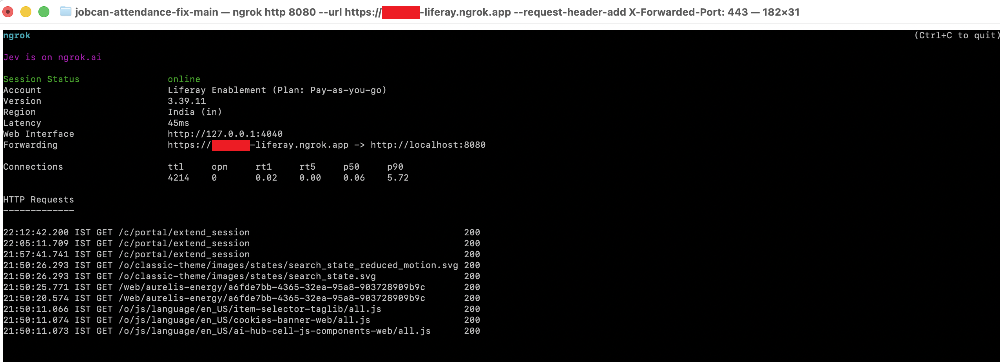
💡 请保持 ngrok 检查器处于打开状态：http://localhost:4040。它列出经过隧道的每个请求，包括方法、URL、状态、标头和正文，并且可以重放其中任何一个。从第 7 级开始，它是唯一能看到 AI Hub 对您 Liferay 发起的调用（Liferay Search RAG、HTTP Request 节点）的地方：这些调用来自云端，因此既不会出现在浏览器的 DevTools 中，也不会在 Liferay 日志中以可识别的形式出现。当聊天机器人的回答看起来不对时，请先查看这里：AI Hub 是否调用了 DXP，调用了哪个 URL，返回了什么状态？
⚠️ 检查器会以明文显示请求标头，包括 Authorization 令牌。分享其截图之前请先将其隐藏。
💬 提示词（第 2 轮）：
Liferay is up. Verify exercise 0.2 for my domain <your-domain> without starting or stopping anything:
1. GET https://<your-domain>/ through the tunnel. Pass if it returns Liferay HTML. If it returns an ngrok "visit site" interstitial page instead, fail and tell me: it means the tunnel isn't running on the Liferay Enablement account's paid plan.
2. GET https://<your-domain>/o/headless-admin-user/v1.0/my-user-account without credentials. Pass if the response is JSON (a 401 or 403 is fine), not HTML.
3. Check the forwarded-port config: fetch https://<your-domain>/o/api and confirm no URL in the response contains ":80" or "http://<your-domain>".
4. Confirm http://localhost:4000/o/glowroot loads locally. Never reach it through the tunnel.
5. Report each check as PASS or FAIL with the evidence. Don't change any password and never print any credential.
✅ 验证：Claude 报告中的每项检查都显示 PASS。https://<your-domain> 能在浏览器中加载 — 没有代理错误、没有插页、没有试用期已过的横幅 — 并且旧的默认密码已失效。http://localhost:4000/o/glowroot（仅限本地访问，切勿通过隧道）显示 Glowroot UI。
⚠️ 免费的 ngrok 主机名（*.ngrok-free.app）会在每个请求前插入一个交互式的「visit site」插页 — 对点击通过的人来说几乎察觉不到，但对任何无人值守的 API 调用（包括之后 AI Hub 自己的 HTTP Request 节点）来说却是静默致命的。这就是本课程使用 Enablement 账户的付费套餐和您预留的域名的原因。如果某个 curl 调用返回的是 HTML 而不是 JSON，在怀疑 Liferay 之前，请先检查 ngrok 是否使用 Enablement 账户的 authtoken 和您的域名运行。
⚠️ 代理切勿自行运行启动/停止命令 — 这是一条硬性规则（CLAUDE.md），这样也能规避防病毒/终端安全软件：即使由您运行同一命令没有问题，这类软件也常常会阻止由代理派生的进程。
0.2.1 — 替代方案：用一个提示词端到端完成练习 0.2
🎯 与 0.2 相同的结果 — 一个在您预留的 ngrok 域名之后运行、并已设置新管理员密码的 Liferay — 只需一个提示词：Claude 准备机器、启动隧道和 Liferay、检查所有内容并更改管理员密码。
🧩 workspace-init、deploy-and-verify
0.2 和 0.2.1 二选一，不要两者都做。0.2 让您掌控服务器；0.2.1 则把一切交给 Claude。
⚠️ 此提示词放宽了 0.2 中 Claude 绝不启动或停止服务器的规则。它的第一行明确授权 Claude（仅限本练习）停止它发现的 Docker 容器和 ngrok 进程、在本工作区自己的 Liferay 正在运行时将其停止，并启动 Liferay。防病毒或终端安全软件仍可能阻止 Claude 启动的进程：如果 Liferay 或 ngrok 无法由 Claude 启动，请亲自运行该命令并让 Claude 从下一步继续，或者改为按照 0.2 操作。
📋 发送之前：
- 您已接受加入 Liferay Enablement ngrok 账户的邀请，预留了您的域名，并注册了该账户的 authtoken（设置您的工作站，第 4 步）。
- 关闭所有打开您域名的浏览器标签页。在启动完成之前到达 Liferay 的请求可能导致 DSR 站点初始化程序过早运行。
- 预计 Claude Code 会在执行若干命令（
docker stop、pkill、blade）之前征求您的同意。请批准它们，或在本练习中切换到更宽松的权限模式。 - 将提示词中的
<your-domain>替换为您的域名，例如<your-name>-masterclass.ngrok.app。
💬 提示词：
Run exercise 0.2 end to end, fully automated, with my ngrok domain <your-domain>. I authorize you, for this exercise only, to stop the Docker containers and ngrok processes you find, to stop this workspace's own Liferay if it is running, and to start Liferay yourself. Report what you did at each step.
0. Preflight
a. Check the tools: java -version reports 21, blade version runs, and ngrok version runs. If ngrok is older than 3.16, tell me to update it and stop.
b. Check ngrok's config is valid (ngrok config check). Never print the authtoken.
c. If Docker is installed and running, list running containers (docker ps), show me the list, then stop each one with docker stop. Don't remove containers, images or volumes. If Docker isn't installed or isn't running, skip this.
d. List running ngrok processes (ps/pgrep on macOS and Linux, tasklist on Windows), show me the list, then stop each one (pkill ngrok, or taskkill /IM ngrok.exe /F on Windows). Confirm http://localhost:4040 no longer answers.
e. If this workspace's own Liferay is running (a Tomcat started from this workspace's bundles/), stop it with blade server stop and wait until port 8080 is free.
f. Check ports 8080, 4040 and 4000 are free. If anything else holds one of them, don't kill it: tell me what it is and stop the exercise.
1. Tunnel
a. Start a new tunnel detached from this session, so it survives when the session ends, with its output going to ngrok.log in the workspace root (nohup ... & on macOS and Linux, Start-Process on Windows):
ngrok http 8080 --url=https://<your-domain> --request-header-add "X-Forwarded-Port: 443"
b. Confirm through ngrok's local API (http://localhost:4040/api/tunnels) that the tunnel is online and its public URL is https://<your-domain>.
c. If ngrok reports the endpoint is already online (ERR_NGROK_334), another session, probably on another machine, holds my domain: stop and tell me to stop it there, or in the ngrok dashboard under Agents. If ngrok says the domain isn't reserved for my account, I'm signed in with the wrong authtoken: stop and tell me.
2. Host name
a. In configs/local/portal-ext.properties, set web.server.host=<your-domain>: no https:// prefix and no trailing slash. Change nothing else, and show me the diff.
b. If bundles/ already exists, set the same value in bundles/portal-ext.properties, because blade server init copies configs/local only when it creates the bundle. If bundles/data/ exists, this bundle has already been started: tell me which host it was started with and stop, because changing the host on a used bundle breaks Data Sets, and it needs a fresh bundle, which I'll decide on.
3. If bundles/ doesn't exist, run blade server init. Then confirm bundles/portal-ext.properties has web.server.host=<your-domain>, bundles/tomcat/bin/setenv.sh (or setenv.bat) contains -Xmx4096m and glowroot.jar, and bundles/glowroot/ exists.
4. Start Liferay
a. Note the current line count of bundles/tomcat/logs/catalina.out (0 if it doesn't exist): the file keeps earlier boots, so only lines after that count belong to this start.
b. Run blade server start, which starts Tomcat in the background and keeps it running after this session ends. Don't use --tail or blade server run.
c. While Liferay starts, send no HTTP request to it, locally or through the tunnel. An early request can make the DSR site initializer run too soon.
d. Follow the new lines of catalina.out until "Server startup in" appears, for up to 20 minutes. If an exception appears, or startup times out, stop and show me the relevant lines from catalina.out and bundles/logs/liferay.*.log.
5. Check through the tunnel:
a. GET https://<your-domain>/ returns Liferay HTML, not an ngrok "visit site" interstitial page.
b. GET https://<your-domain>/o/headless-admin-user/v1.0/my-user-account without credentials returns JSON (a 401 or 403 is fine), not HTML.
c. https://<your-domain>/o/api contains no URL with ":80" or "http://<your-domain>".
d. http://localhost:4000/o/glowroot loads locally. Never reach it through the tunnel.
6. Change the admin password
a. The current admin is test@liferay.com / test unless configs/local/admin.properties already exists, in which case use the credentials in it.
b. Confirm configs/local/admin.properties is listed in .gitignore; add it if it isn't.
c. With a shell command, generate a 24-character password of letters and digits only, and write it straight into configs/local/admin.properties as ADMIN_EMAIL=<admin email> and ADMIN_PASSWORD=<new password>. Keep the old file's credentials until the change succeeds. The new password must never appear in your output, in the conversation or in any other file.
d. Set it with PATCH /o/headless-admin-user/v1.0/user-accounts/{admin id} {"password": ...} on http://localhost:8080, reading the value from that file and authenticating with the current credentials. If it's refused, restore the old file and tell me to change the password myself under My Account → Password.
e. Verify: GET /o/headless-admin-user/v1.0/my-user-account with the new credentials returns 200, and with the old ones returns 401.
Finish with a table: one row per step and check, PASS, FAIL or SKIPPED, with the evidence. Tell me the password is in configs/local/admin.properties, without showing it, and remind me to open https://<your-domain> in my browser to sign in.
✅ 验证：Claude 表格的每一行都显示 PASS 或 SKIPPED。https://<your-domain> 能在浏览器中加载，并且您可以使用 configs/local/admin.properties 中的凭据登录（请亲自打开该文件；切勿将密码粘贴到聊天中）。FAIL 行会告诉您从哪里继续：修复原因，然后让 Claude 从该步骤继续。
⚠️ 此提示词会将新的管理员密码写入 configs/local/admin.properties。在练习 0.3 中，请跳过第 1 步：该文件已存在，直接进入提示词即可。
0.3 — 持久化并验证管理员登录
🎯 一份以后每个会话都能自行找到的凭据，而不是「交给 Claude」一次后就被遗忘。
🧩 无 — 研讨会准备事务。
📋 步骤：
- 在聊天之外亲自创建
configs/local/admin.properties— 两行内容，ADMIN_EMAIL=.../ADMIN_PASSWORD=...。如果您按照 0.2.1 操作，该文件已存在：请跳过此步骤。 - 让 Claude 确认它已列在
.gitignore中（如未列出则添加），然后通过一次真实调用验证凭据。
💬 提示词（第 1 轮）：
Confirm configs/local/admin.properties exists and is listed in .gitignore —
add it there if it isn't. Then read the admin email and password from that
file (never print the password back to me) and validate it works: call
GET /o/headless-admin-user/v1.0/my-user-account with Basic Auth and show me
the 200 response's own name/emailAddress field.
💬 提示词（第 2 轮 — 修改 CLAUDE.md，让以后的每个会话都能自动找到它）：
Update CLAUDE.md's 'Establish Context First' section, point 4, to read:
'Authentication. Look first for configs/local/admin.properties
(git-ignored; ADMIN_EMAIL=... / ADMIN_PASSWORD=...), then
LIFERAY_ADMIN_EMAIL/LIFERAY_ADMIN_PASSWORD environment variables. Use them
for Basic Auth without ever printing, logging, or echoing the password into
the conversation or any generated file. If neither exists, ask the user once
for the admin account to use, then — with their explicit confirmation —
write it to configs/local/admin.properties so no future session has to ask
again. Never accept a password typed inline as part of a task description.'
Confirm the edit was saved.
✅ 验证：打开一个真正全新的 Claude 会话，给它一个需要身份验证的普通任务，并且完全不提凭据。它应该能自行找到 configs/local/admin.properties 并完成身份验证，而无需向您索要任何信息。
⚠️ 避免在提示词或对话记录中直接输入密码。如果之后的练习遇到无法解释的 401/403，请先重新检查本练习的设置，再进一步调试。
0.4 — 动手之前先了解环境
🎯 确认实际的 DXP 版本、端口和身份验证方式 — 绝不想当然。
💬 提示词：
Read CLAUDE.md's 'Establish Context First' section, then walk me through this
workspace: find the workspace root, read the DXP version from
gradle.properties, check whether bundles/ exists and what port Tomcat is on,
and tell me what authentication method is available. Don't touch anything yet.
✅ 验证：亲自打开 gradle.properties 和 bundles/tomcat*/conf/server.xml，独立确认报告中的四项事实。此工作区中记录的一些特殊行为会随季度版本而变化 — 每次都要抽查。
0.5 — 梳理现有的站点初始化程序
🎯 在添加任何内容之前，列出源代码中已有的内容（片段、页面、母版页分配）。此时尚未部署任何内容 — 部署在练习 1.3 中进行。
💬 提示词：
Walk the site-initializer/ tree under client-extensions/ and list every
fragment (directory name = fragment key), every page under layouts/, and
which master page is assigned to the home page. This is a read of the source
tree only — nothing has been deployed yet. Don't create, modify, or deploy
anything, this is reconnaissance only.
✅ 验证：亲自对照 ls client-extensions/*/site-initializer/fragments/group/*/fragments/ 和 layouts/ 文件夹进行交叉核对。
注意 — 从这里开始，请使用简短的 Claude Code 会话。每当您进入一个并非直接基于上一个练习的练习时，请启动新会话（或输入 /clear）。这会重置上下文：对话中累积的所有内容不再随每个请求重新发送，因此令牌消耗保持在较低水平，代理也能专注于手头的任务。不会丢失任何内容，因为新会话会从 solution-context.md 和 solution-index.yaml（练习 0.1）中接续项目。只有当多个练习紧密关联时（例如一个构建练习及其后续修复），才在它们之间保持同一个会话。
第 1 级 — 基础（MCP Server）
1.1 — 启用并查询 MCP 服务器
🎯 确认 Claude 能够通过 MCP「看到」实时的对象架构，而不是去猜测。
🧩 mcp-server
💬 提示词：
Check whether feature flag LPD-63311 (the Liferay MCP server) is enabled on
this instance. If not, enable it using the feature-flags skill. Then connect
over MCP, run tools/list, and use the tools it actually returns to list every
object definition currently in this workspace. Don't assume tool names: on
this release the server exposes a discovery chain (tool sets, then a set's
operations, then an operation's schema, then invoke), not a single
call-http-endpoint tool. Show me which tools you called, in order.
✅ 验证：直接调用 GET /o/object-admin/v1.0/object-definitions，确认其结果与 MCP 报告的一致。
1.1.1 — 替代方案：将 Claude Code 连接到 MCP 服务器并进行查询
🎯 目标与 1.1 相同，但详细说明了设置过程：Claude 检查 MCP 服务器，在不暴露您凭据的前提下将其注册到 Claude Code 中，然后仅通过 MCP 回答关于此实例的实际问题，并证明这些答案与 REST 的结果一致。
🧩 mcp-server
1.1 和 1.1.1 任选其一即可。1.1.1 适合之前从未在 Claude Code 中注册过 MCP 服务器的学员。
📖 提示词会为您处理以下两件事：
- 在 2026.Q3 上，仅有功能标志还不够。
LPD-63311已在此工作区的portal-ext.properties中开启，但还需要在 Control Panel → Instance Settings → Platform → MCP Server → Enabled 中启用服务器。在此之前，/o/mcp只会返回一个普通的 Liferay 404 页面。该界面需要已登录的管理员操作，因此请在 Claude 提出请求时由您自己开启。 - Claude Code 在会话启动时读取其 MCP 服务器。因此需要分两轮：第一轮注册服务器，第二轮使用它。请在两轮之间重启 Claude Code，让第二轮能够使用原生 MCP 工具。如果不重启，第二个提示词仍然可以运行：Claude 会自行将同样的 MCP 调用发送到
/o/mcp。
💬 提示词（第 1 轮 — 连接）：
Set up the Liferay MCP server for this workspace, following the mcp-server skill.
1. Confirm feature flag LPD-63311 is on (it's in configs/local/portal-ext.properties); don't restart anything.
2. Call initialize on http://localhost:8080/o/mcp with Basic auth from configs/local/admin.properties, never printing the password. If it answers with a Liferay 404 page, stop and tell me to enable Control Panel → Instance Settings → Platform → MCP Server → Enabled myself, then try again.
3. Register the server in Claude Code at local scope (claude mcp add --scope local, Streamable HTTP, http://localhost:8080/o/mcp, Basic auth header built from admin.properties), so the credential stays out of the repository. Never show the header value.
4. Tell me to restart this Claude Code session, then check with /mcp that "liferay" is connected.
重启 Claude Code，运行 /mcp，检查 liferay 服务器是否显示为已连接。然后在新会话中（如果跳过重启，则在同一会话中）：
💬 提示词（第 2 轮 — 查询）：
Use only the Liferay MCP server for this, not REST endpoints. Never print the admin password or the Authorization header.
0. Pick the MCP path.
a. If this session has the "liferay" MCP tools loaded (check with a tool search), use them.
b. If not, the session started before the server was registered. Don't stop: send the same MCP JSON-RPC calls yourself to http://localhost:8080/o/mcp (POST, Content-Type: application/json, Accept: application/json, text/event-stream, Basic auth built from configs/local/admin.properties inside the script so the credential never appears in a command or in output). Send initialize first, then tools/list, then tools/call. Tell me which path you used, and that I can restart the session to use the native tools.
c. If initialize returns a Liferay 404 page, stop and tell me to enable Control Panel → Instance Settings → Platform → MCP Server → Enabled.
1. Run tools/list and show me the tools it returns, with their arguments. On 2026.Q3 they are a discovery chain (getToolSetsPage → getToolSetToolSetNameToolSummariesPage → getToolSetToolSetNameTool → postToolSetToolSetNameToolInvoke); don't assume a tool exists because another release had it.
2. Walk the chain to answer: which custom object definitions exist in this instance?
- Find the tool set (object-admin-v1.0), its operation (getObjectDefinitionsPage), and read that operation's schema before invoking it.
- Invoke it with query parameters flat inside "body", e.g. {"pageSize": 200}. A request payload, if an operation has one, is nested once more under its own "body" key.
- "Custom" means system == false. Filter client-side: the API rejects filter=system eq false with 400.
- For each custom definition give its name, REST path (restContextPath, /o/c/<plural>), scope, status label and number of fields (the length of objectFields, which includes the built-in system fields; also give the custom-field count in brackets). Also give the total number of definitions.
3. Answer one Aurelis question: how many Accounts are there (totalCount), and what are the names of the first five sorted by name ascending? Use headless-admin-user-v1.0 → getAccountsPage with body {"pageSize": 5, "page": 1, "sort": "name:asc", "fields": "id,name"}.
4. Show me every MCP call you made, in order, as a table: number, JSON-RPC method or tool, tool set, operation, and body.
5. Check your step 2 answer against a direct GET http://localhost:8080/o/object-admin/v1.0/object-definitions?pageSize=200 (Basic auth from admin.properties, passed through a curl config file, never on the command line). Apply the same system == false filter, compare name, REST path, scope, status and field count row by row, and compare totalCount. Tell me whether they match, and list any row that differs.
Delete any temporary file that held a credential when you're done.
✅ 验证：Claude 说明了它使用的 MCP 路径（重启后，/mcp 将 liferay 列为已连接）；其 MCP 调用表依次走完了发现链；MCP 返回的自定义对象定义及其总数与直接 REST 调用的结果逐行一致；并且密码和 Basic 认证头均未出现在输出、代码库（git grep -i authorization 未发现新内容）或残留的临时文件中。
⚠️ 如果直接 REST 调用正常，但每个 MCP 调用都返回 403，请参阅 mcp-server 技能中的「MCP/REST Auth Split」部分；在 Windows 上，还请参阅其中关于 ~/.claude.json 中重复盘符条目的说明。
1.2 — 启用本路径所需的功能标志
🎯 LPD-74328（实时页面组合）、LPS-164563（Data Set 管理）、LPD-17564 + LPD-52006（按条目权限）— 全部在需要之前启用。
🧩 feature-flags
💬 提示词：
Audit whether these feature flags are enabled: LPD-74328 (live page
composition), LPS-164563 (Data Set admin), and LPD-17564 plus LPD-52006
(per-entry permissions). Report the current state of each, then enable
whichever are off.
📸 截图：Control Panel → Instance Settings → Feature Flags，显示现已启用的开关。
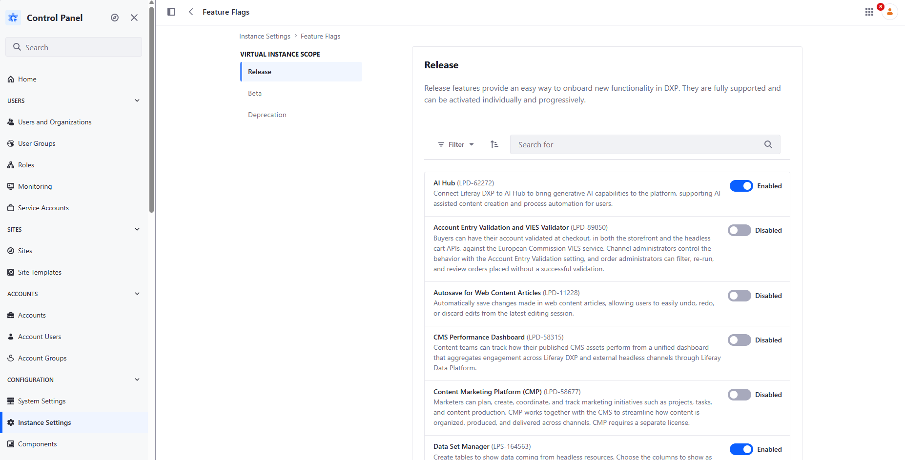
✅ 验证：亲自打开 Feature Flags 面板，确认每个开关的实时状态。
1.3 — 第一个部署/验证循环
🎯 首次部署站点初始化程序，并根据运行时状态（而不是退出码）确认部署成功。
🧩 deploy-and-verify
💬 提示词：
Deploy the site-initializer Client Extension for the first time in this
workspace and confirm it actually started — don't just report that the
command exited 0. Tail the log in the background and show me the STARTED
line before calling this done.
✅ 验证：亲自 grep STARTED，检查 bundles/tomcat*/logs/catalina.out（或 bundles/logs/liferay.<date>.log）。这将成为您在本路径后续部分中的个人「每次部署后检查项」检查清单。
1.4 — 将 Aurelis 设为门户首页并为您的实例命名
🎯 站点初始化程序已经创建了 Aurelis Energy 站点，现在将门户首页指向它，并为您的 Liferay 实例取一个班上其他人都没有使用的名称。
📋 步骤（在浏览器中手动操作，不使用代理）：
- 打开 Control Panel → Instance Settings → Instance Configuration → General（Virtual Instance Scope）。
-
Name：将默认值替换为您独有的名称，例如
Liferay <YOUR LASTNAME>。- 为什么这很重要：本课程使用的 Liferay Data Platform 环境由所有学员共享。您的实例会以这个名称出现在其中。如果每个人都保留默认名称，在第 4 级（及之后）的 Data Platform 练习中，您将无法分辨哪些数据是您自己的。
-
Navigation：将以下三个字段都设为 Aurelis 站点的 URL
/web/aurelis-energy：- Home URL
- Default Landing Page（用户登录后进入的页面）
- Default Logout Page（用户退出后进入的页面）
-
保持 Mail Domain 和 Virtual Host 不变。Virtual Host 必须保持为练习 0.2 中您自己的隧道主机名。
- 点击 Save。
📸 截图：Instance Configuration → General 界面，显示您的唯一名称以及已设置的三个导航字段。
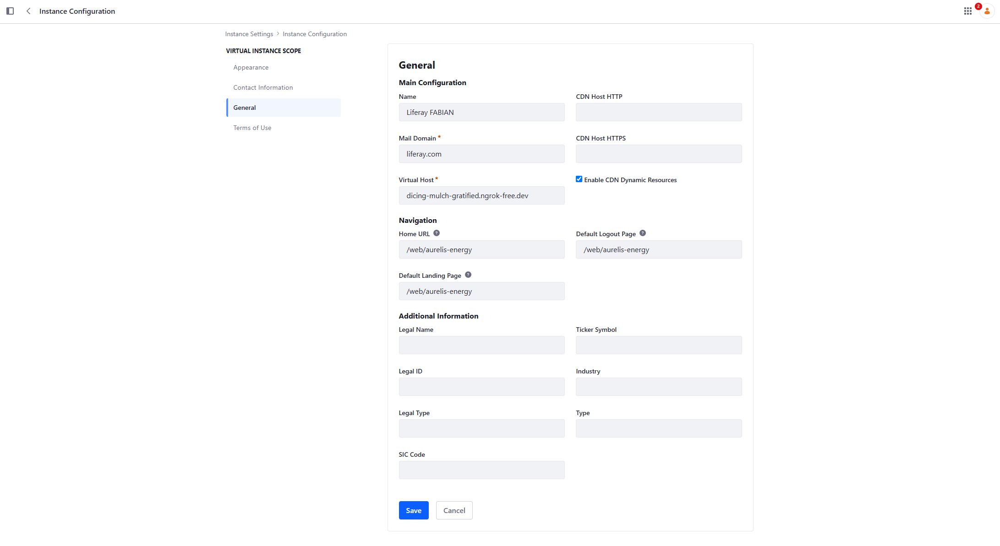
✅ 验证：
- 在隐私窗口中打开隧道的根 URL（
https://<your-tunnel-host>/）。您应进入 Aurelis Energy 首页，而不是默认的 Liferay 欢迎页面。 - 先登录，再退出。两次都应回到 Aurelis 站点。
- 如果
/web/aurelis-energy返回 404，请在 Site Settings → Site Configuration 中查看站点的实际友好 URL，并改用该值。
第 2 级 — 业务数据建模（Liferay Objects）
Brief 要求 Lot 1 构建并维护一个目标账户情报数据库（Target Account Intelligence Database），而不是从外部系统复制一个 — 因此本级扩展 Liferay 原生的 Account 系统对象，并从一开始就将其作为记录系统。
📖 账户评分的来龙去脉 — 开始第 2 级之前请先阅读
业务问题。Aurelis 的销售团队无法跟进每一家公司。Brief 要求平台告诉他们应该把精力放在哪里。平台通过回答关于每个目标账户的三个问题来实现这一点：
- Fit（契合度） — 这是我们想要的那类公司吗？行业、站点数量、能源需求。存储为
fitScore，取值为 0 到 100 的整数。- Value（价值） — 这个账户可能值多少？Brief 称之为「Opportunity Potential」，以欧元表示（Novacorp 为 €8–12M）。这里将其归一化为
valueScore，取值为 0 到 100 的整数，以便与 Fit 结合。- Intent（意向） — 他们现在是否表现出购买迹象？访问的页面、下载的白皮书、提交的表单、聊天机器人对话。在评分中，Intent 以
numberOfLeads衡量：即关联到该账户的潜在客户（表单提交）数量。三者组合成一个数字，即用于对账户排序的 Aurelis Opportunity Score（
combinedOpportunityScore）：
combinedOpportunityScore = min(100, round(fitScore × valueScore / 100 × (1 + min(numberOfLeads, 5) / 10)))Fit × Value 给出账户的基础潜力。每个潜在客户增加 10% 的意向加成，上限为 +50%。评分本身与 Fit 和 Value 一样以 100 为上限：拥有许多潜在客户的优质账户止于 100，而不会超出范围。之所以采用加成而不是第三个乘数，是因为尚无潜在客户的账户仍然值得跟进，只是暂时还没有表现出意向。
贯穿始终的示例。Novacorp（42 个物流站点、正在电动化的车队、目前储能很少）的 Fit 为 92，Value 为 90，因此在尚无潜在客户时其评分为 83，是数据集中最高的。这就是第 8 级为 Novacorp 开设 Digital Sales Room 的原因。即使是最大的意向加成，也无法让其他账户超过它（Solstice 最高为 82）。
每个部分存放在哪里，以及何时构建：
部分 存储于 填写者 练习 分类： sector、size、priorityTierAccount（原生，已扩展）员工 2.1，在 4.4 中编辑 fitScore、valueScoreAccountIntelligenceProfile员工（手动输入；实际中来自 Aurelis 自己的评分模型） 2.2，在 2.3 中加载 numberOfLeads（评分中的 Intent）Account（Aggregation 字段：统计关联的潜在客户）平台，随着潜在客户关联到账户 2.2，潜在客户来自 4.1，在 6.2 中自动关联 combinedOpportunityScoreAccountIntelligenceProfile先随数据集加载，之后自动计算 2.3，在 6.2 中自动化 更丰富的意向信号 Liferay Data Platform 事件、聊天机器人信号 平台，随着访客的互动 4.1、9.1、9.2 账户排名视图 Account Intelligence 页面 平台 4.3 为什么使用单独的
AccountIntelligenceProfile对象，而不是在Account上增加更多字段？Account自身的 API 无法按自定义字段排序，而且Account既不支持 Display Page Template，也不支持 Form Container。关联到Account的普通自定义对象没有这些限制，因此 4.3 中的排名页面可以按评分排序。本课程做了哪些简化。评分中的 Intent 只是潜在客户的数量，不考虑时效性。更丰富的信号（第 4 级中的 Liferay Data Platform 事件、第 9 级中的聊天机器人信号）会被采集，但不会影响评分。Brief 中的「Solution Affinity」指标（哪些 Aurelis 产品适合该账户）未建模。
2.1 — 扩展原生的 Account 系统对象
🎯 将 sector（选择列表）、size 和 priorityTier（选择列表）添加到 Account。
🧩 manage-objects
📎 REQ-22 — 构建并维护专有的目标账户情报数据库。
💬 提示词：
Using manage-objects, extend the native Account System Object with a sector
field (Picklist), a size field (Integer, number of employees), and a
priorityTier field (Picklist). This is a System Object extension, not a new
Custom Object — confirm the mechanics differ before publishing.
Use exactly these picklist entry keys (they must match the dataset loaded
later):
- sector: logistics, manufacturing, foodDistribution, retail, hospitality
- priorityTier: strategic, key, standard
📸 截图：Account 对象定义的字段列表，显示三个新的自定义字段与内置字段并列。
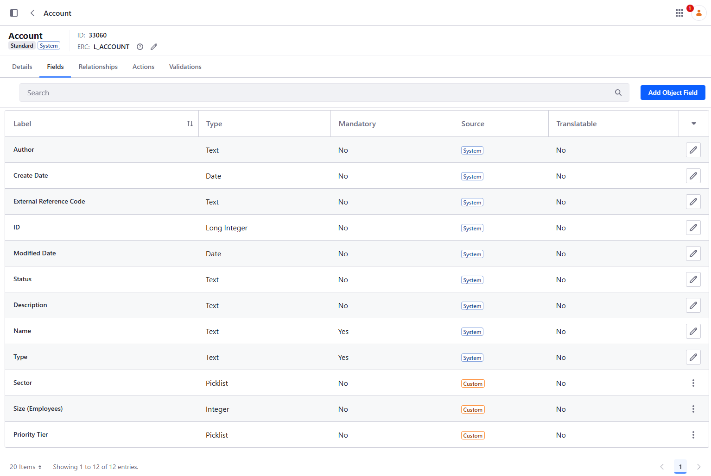
✅ 验证：GET /o/object-admin/v1.0/object-definitions?filter=name eq 'Account' 显示这三个字段；对实际条目执行 GET /o/headless-admin-user/v1.0/accounts 返回已填写的字段值。
2.2 — AccountIntelligenceProfile 和 Lead
🎯 一个关联到 Account 的评分对象，保存 Fit、Value 和组合后的 Opportunity Score。以及一个 Lead 对象，以多对一方式关联到 Account，即第一个意向信号。
🧩 manage-objects
📎 REQ-24、REQ-27 — Strategic Fit Score、Opportunity Potential 以及组合 Opportunity Score（参见上文「账户评分的来龙去脉」）。
💬 提示词：
Create an AccountIntelligenceProfile object with three Integer fields:
fitScore (0-100), valueScore (0-100) and combinedOpportunityScore (0-100).
Add a validation that rejects fitScore or valueScore outside 0-100. Relate it
to the native Account object as a oneToMany relationship from Account
(oneToOne is rejected server-side on this release — enforce
single-profile-per-account as a business rule, not a schema constraint).
Create a new Lead object with the fields a qualified lead would carry,
including a company Text field and a qualificationStatus picklist
(unqualified, qualified), and add a many-to-one relationship from Lead to
Account. Finally, add an Aggregation field numberOfLeads on Account that
counts its related Leads.
Access expectations: grant Guest nothing on either object in this exercise.
Leads will later come from anonymous form submissions, and
they will then get Guest ADD_OBJECT_ENTRY only, never VIEW: Leads hold names
and emails. AccountIntelligenceProfile is internal sales data and must never
be readable anonymously.
⚠️ numberOfLeads 从 Account API 返回时是字符串（"numberOfLeads": "1"），而不是数字，并且无法对其排序或过滤。这没有关系：它只是评分的输入，本身从不作为排序键。任何读取它的代码都必须先进行转换（parseInt）。
📸 截图：已创建 Lead 和 Account Intelligence 对象定义，并与 Account 建立了一对多关系。

✅ 验证：在 Control Panel → Objects 中，确认两个定义均已发布，AccountIntelligenceProfile 包含三个 Integer 字段和 0–100 校验，与 Account 的两个关系均已存在，并且 Account 现在有 numberOfLeads Aggregation 字段。您将在下一个练习中为它们填入实际数据。
2.3 — 加载目标账户数据集
🎯 六个逼真的目标账户，各自带有分类和评分档案，这样后续每个练习（4.3 中的排名页面、6.2 中的评分自动化、8.1 中的 Digital Sales Room）对每个人都基于相同的数据。
🧩 manage-objects（通过 Headless API 创建条目）
📎 REQ-22 — 填充目标账户情报数据库。
数据集位于 context-source/target-accounts.csv：
| accountName | sector | size | priorityTier | fitScore | valueScore | combinedOpportunityScore |
|---|---|---|---|---|---|---|
| Novacorp | logistics | 8500 | strategic | 92 | 90 | 83 |
| Solstice Manufacturing | manufacturing | 2400 | key | 78 | 70 | 55 |
| Alderbrook Manufacturing | manufacturing | 3200 | key | 85 | 60 | 51 |
| Norrland Foods | foodDistribution | 1900 | key | 80 | 55 | 44 |
| Helix Retail Group | retail | 12000 | standard | 55 | 75 | 41 |
| Brightwater Hospitality | hospitality | 600 | standard | 40 | 30 | 12 |
如何解读：combinedOpportunityScore 已经填好，采用「账户评分的来龙去脉」中的公式，且尚无潜在客户（因此就是 round(fitScore × valueScore / 100)）。目前这些值只是数据；练习 6.2 会让平台计算它们，包括意向加成。请注意 Helix Retail Group：它是一家大公司（Value 高），但与 Aurelis 契合度差（Fit 低），因此排名低于规模较小但更契合的账户。这正是结合两个维度的意义所在。
💬 提示词：
Load context-source/target-accounts.csv into the platform. For each row,
create (or update, if it already exists) an Account with that name, sector,
size and priorityTier, and exactly one AccountIntelligenceProfile linked to
it, carrying fitScore, valueScore and combinedOpportunityScore as given — do
not recompute them. Give every Account and profile a readable external
reference code derived from the account name (e.g. novacorp,
novacorp-profile) so re-running this is idempotent. Don't create any Lead:
every account must start with numberOfLeads = 0.
✅ 验证：
GET /o/headless-admin-user/v1.0/accounts返回这六个账户，且sector、size和priorityTier均已填写。GET /o/c/accountintelligenceprofiles恰好返回六个档案，每个账户一个，评分与表格一致。- 每个账户都返回
"numberOfLeads": "0"。
2.4 — 在出现合格潜在客户时发送通知
🎯 一个 Object Action，在创建 Lead 且其为合格状态时，发送 Liferay 应用内通知（通知铃铛，而不是电子邮件）。
🧩 manage-object-logic
📎 REQ-43 — 在会议/潜在客户创建后，将资格评估上下文交给销售人员。
💬 提示词：
Add an Object Action on Lead, triggered onAfterAdd, that notifies the
salesperson when an entry is created. Use an in-app Liferay notification
(a User Notification template, delivered to the notifications bell) — not
an email. Send it to my own admin account, standing in for the salesperson,
and include the lead's contact name and qualification status in the message.
Leave the condition expression empty at first so I can see it fire on every
write, then help me tighten it to only fire when qualificationStatus is
qualified.
📸 截图：已创建 Lead Object Action 和 Notification 模板。
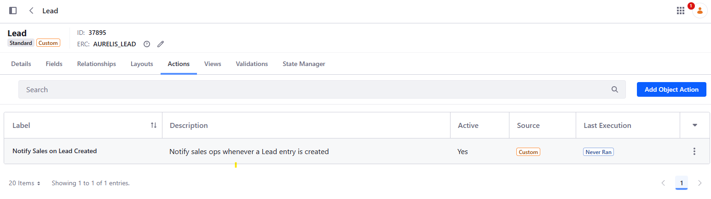
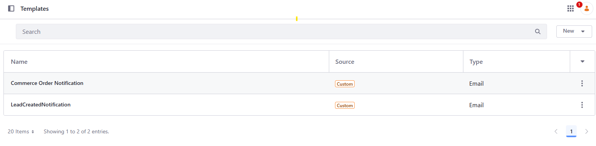
✅ 验证：创建一个 Lead，其 qualificationStatus 为 unqualified（无通知），再创建一个 qualified 的（顶栏铃铛图标下出现一条新通知，字段已正确插值 — 而不是字面的 [%TOKEN%] 文本）。
创建它们最简单的方法是询问 Claude：
Create two test Leads through the Lead API, both linked to the Brightwater
Hospitality account loaded earlier, with a made-up contact name and
company: the first with qualificationStatus unqualified, the second with
qualificationStatus qualified. Show me the response of each call.
📖 将它们关联到评分最低的账户 Brightwater Hospitality，意味着无需手动创建任何账户，而且这两个潜在客户之后也不会改变排名：练习 6.2 加入意向加成后，其评分只会从 12 升到 14。
第 3 级 — 编辑内容（CMS、CMP）
3.1 — 四个 CMS Spaces，四个 Content Structures
🎯 每类受众一个 Space + Content Structure：Product Content、Customer Documentation、Partner Portal、White Papers — 并将 context-source/ 中现有的每份文档都导入为实际条目。
🧩 manage-cms 🆕
📎 REQ-08–REQ-11（CMS、可复用结构、富文本编辑、DAM），REQ-14（翻译）。
📋 源文件夹 — 导入前请确认实际文件数量，不要假定为下列数字：
context-source/products/（约 5 个文件）→ Product Contentcontext-source/customer-documentation/（约 10 个文件）→ Customer Documentationcontext-source/partner-documentation/（约 10 个文件）→ Partner Portal（必须准确使用此名称 — 练习 7.1 按此名称引用它）context-source/white-papers/（3 个文件，Novacorp/Alderbrook/Norrland）→ White Papers
💬 提示词：
Using manage-cms, read every file under context-source/products/,
context-source/customer-documentation/, context-source/partner-documentation/,
and context-source/white-papers/. For each of the four folders, design one
Content Structure whose fields actually fit that folder's content, create a
Space named appropriately for its audience (name the partner one 'Partner
Portal'), connect each Space to [site], and import every document in that
folder as a real entry using its own content. Don't skip any document, and
don't force all four folders into one shared structure.
Add a documentType Picklist on the Customer/Partner Documentation structures
to capture sub-genre (user guide, release notes, SLA handbook, certification,
technical manual, etc.) instead of splitting into a structure per sub-genre.
Model minimumPartnerTier and any account-scoping-looking field as plain data
only — no Role, permission grant, or scoping mechanism yet. That comes
later.
Access expectations: don't open anything to Guest in this exercise. Later
exercises open exactly what must be public: the White Papers entries and
the Product Content entries. Customer Documentation and Partner
Portal must never become readable anonymously. If the import leaves Guest
VIEW on any entry or folder, tell me rather than leaving it silently.
⚠️ 不要在本练习中构建页面或 Collection Display — 那是第 4 级的任务。在这里构建一个临时页面只会重复那一步，毫无益处。
📸 截图：已创建 4 个 CMS 空间，以及内容结构和内容。
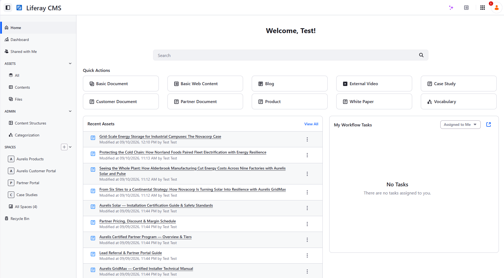
✅ 验证：对全部四个 Space，GET .../asset-libraries/{spaceERC}/connected-sites 列出目标站点；GET /o/c/<pluralLabel>/scopes/{spaceScopeId} 返回预期的条目数量，且全部为 status: approved。
⚠️ CMS 空间和内容结构的名称可能与截图不同。 本练习假定 AI 代理会根据此工作区中包含的内容推断结构。 因此，这里存在一定的随机性，这完全在预期之中。如果旁边有人，不妨看看邻座的屏幕并进行比较。
💡 为什么做这个练习：源文档是结构化内容，但只以渲染后的形式存在。模板还在，底层数据模型却没有了。这正是从现有网站迁移、却拿不到其源数据时的情形。重点在于展示 LLM 能够读取这些渲染后的内容，推断其背后的结构，并重新组织内容，使其可以加载到 Liferay CMS 等目标系统中。上面的提示词有意将结构交由代理决定。在实际项目中，您可以给出更明确的指示：详尽描述目标结构，或者只强调需要单独提取的特定字段，例如便于以后对内容进行过滤或分类。
3.2 — 浏览 CMS 管理界面
🎯 走一遍真实作者日常使用的内容生命周期：草稿、发布、版本历史、定时发布和本地化。有意只使用图形界面 — 不使用技能，也不使用 API。
📎 REQ-08–REQ-21 整体（治理、翻译）。
📋 步骤：
- 打开 CMS。Global Menu → CMS → Contents。
- 找到包含产品的 CMS Space。
- 编辑一个产品，例如 Aurelis GridMax。
- 回到产品列表，对刚编辑的产品使用上下文菜单，选择 View history。
- 恢复上一个版本（上一个版本会作为该内容的又一个新版本被恢复）。
- 现在再次编辑其中一个产品，在右侧菜单中查看 Schedule 部分：它可以让您决定内容何时可见和/或何时过期。
- 回到产品列表，这次使用翻译上下文菜单。Liferay CMS 提供了一个便于内容翻译的图形界面。如果您还无法将内容翻译成其他语言，也不必担心，很快您就可以请 AI Hub 帮忙了！
✅ 验证：一个条目拥有 ≥2 个已发布版本，并演示了回滚；一个条目设置了未来的定时发布日期；在某个产品页上打开了 Translate 界面（此阶段第二种语言环境为可选）。
3.3 — CKEditor5 的原生 AI 操作
🎯 使用 AI Hub 原生的 CKEditor5 AI 菜单进行摘要、面向特定受众改写，并生成语气变体 — 无需插件，无需自定义代码。
🧩 manage-ai-hub 🆕 用于 AI Hub 连接（见下方前提条件）；编辑本身为手动操作。
📎 REQ-33 — AI 生成的草稿、标题/摘要、受众适配、改写、营销活动变体。
📋 前提条件 — 连接 AI Hub（本路径中的第一次）：
- Control Panel → Instance Settings → Feature Flags → Release → 启用 AI Hub (LPD-62272)。
- 在 AI Hub 中：Configurations → 将 Environment URL 设为练习 0.2 中的 ngrok URL（不是
localhost）→ Save → 复制生成的 Client ID / Client Secret。 - 回到 DXP：Control Panel → Instance Settings → AI Hub → 粘贴 Client ID/Secret，将 Service URL 设为
https://ai.hub.liferay.com→ Save。
📸 截图：AI Hub 的 Configurations 界面和 DXP 的 AI Hub 连接界面，均显示已保存的连接。
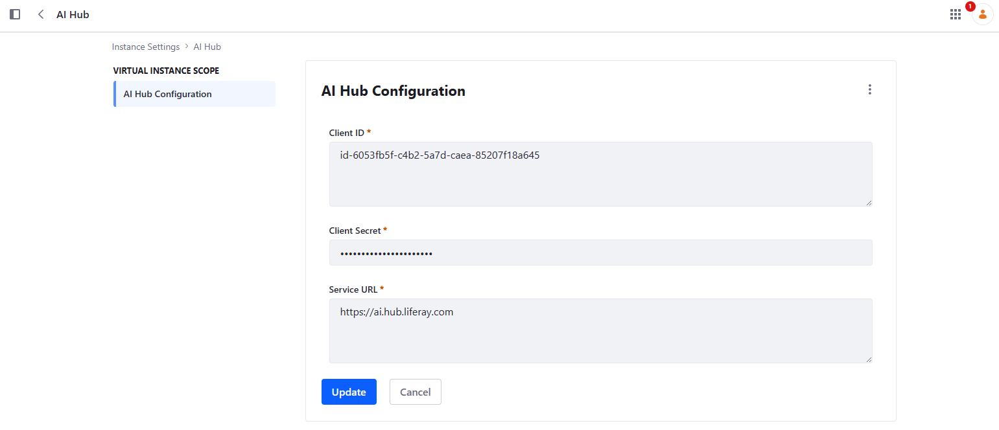

✅ 验证：为了确认一切正常，只需向 CMS 中现已可用的 聊天机器人说一声 Hi! 即可。
📋 在 CMS 中，选择 3.1 中的一个产品条目，选中一个段落，然后使用 CKEditor5 的 AI 菜单：
- 为富文本正文生成摘要。
- 为非技术受众改写一个段落（例如面向房主，而不是设施工程师）。
- 为一个段落生成地区/语气变体（不是语言翻译 — 而是措辞上的调整）。
3.4 — 为白皮书制作建立 CMP 营销活动
🎯 两个新用户（Elena Ruiz、Marcus Chen），其权限各自限定在 White Papers CMS Space 内，以及一个 CMP 营销活动（"New White Papers"），为每位作者分配一个带截止日期的任务。
🧩 manage-cmp-campaigns 🆕 用于营销活动；用户/角色直接通过 MCP/REST 处理。
📎 大规模内容治理 — 白皮书的分配/截止日期生命周期独立于其 CMS 草稿/发布工作流。
📋 前提条件 — 激活 CMP（需许可证的附加组件）：
- 在 Liferay marketplace 中下载 CMP
.lpkg并创建激活密钥。 - 部署激活密钥
- 部署
.lpkg
您应该看到以下内容：
2026-09-15 12:13:26.406 INFO [com.liferay.portal.kernel.deploy.auto.AutoDeployScanner][AutoDeployDir:274] Processing activation-key-content-marketing-platform-1-desktop-mj58ha2.xml
2026-09-15 12:13:32.391 INFO [fileinstall-directory-watcher][b:-1] Content Marketing Platform license validation passed
2026-09-15 12:13:32.392 INFO [fileinstall-directory-watcher][b:-1] License registered for Content Marketing Platform
2026-09-15 12:14:11.547 INFO [com.liferay.portal.kernel.deploy.auto.AutoDeployScanner][AutoDeployDir:274] Processing Liferay Content Marketing Platform.lpkg
2026-09-15 12:14:21.131 INFO [Start Level: Equinox Container: d5e96260-3dbf-4406-800d-a05f76184048][BundleStartStopLogger:66] STARTED com.liferay.headless.cmp.api_2.2.0 [1560]
2026-09-15 12:14:21.135 INFO [Start Level: Equinox Container: d5e96260-3dbf-4406-800d-a05f76184048][BundleStartStopLogger:66] STARTED Liferay Content Marketing Platform - API_26.3.0 [1559]
2026-09-15 12:14:21.312 INFO [fileinstall-directory-watcher][BundleStartStopLogger:66] STARTED com.liferay.site.initializer.cmp_1.0.10 [1565]
2026-09-15 12:14:21.330 INFO [fileinstall-directory-watcher][BundleStartStopLogger:66] STARTED com.liferay.site.cmp.site.initializer_1.0.12 [1564]
2026-09-15 12:14:21.749 INFO [fileinstall-directory-watcher][BundleStartStopLogger:66] STARTED com.liferay.headless.cmp.impl_1.0.8 [1563]
2026-09-15 12:14:22.017 INFO [Start Level: Equinox Container: d5e96260-3dbf-4406-800d-a05f76184048][BundleStartStopLogger:66] STARTED Liferay Content Marketing Platform - Impl_26.3.0 [1561]
2026-09-15 12:14:22.169 INFO [fileinstall-directory-watcher][BundleStartStopLogger:66] STARTED com.liferay.headless.cmp.client_1.0.6 [1562]
如果一切正常，请前往 Control Panel → Instance Settings → Feature Flags 并启用 CMP (LPD-58677)。
⚠️ 如果 CMP 未能正确激活，请不要启用 CMP 功能标志。
💬 提示词：
Using the Liferay MCP server (or the REST API directly if MCP isn't
available), set up a campaign for a new white paper production effort in
CMP, using the manage-cmp-campaigns skill.
First, create two new users: Elena Ruiz (elena.ruiz@aurelis.com), who will
author the ACME Corp white paper, and Marcus Chen (marcus.chen@aurelis.com),
who will author the RayLife Ltd white paper. Both users must be active and
able to sign in. Make each a member of the White Papers Space with a role
that lets them add and edit white paper entries there, but not delete or
publish them, and grants nothing in the other Spaces or in the Control
Panel. Each must be able to see their own CMP task. Before calling it done,
list exactly what the role grants.
Then create a CMP campaign ('New White Papers') for two white papers: one
for ACME Corp, one for RayLife Ltd. Add one task per white paper, each
assigned to the corresponding author, with a due date.
📸 截图：CMP 营销活动看板，显示两个任务，并可见负责人和截止日期。

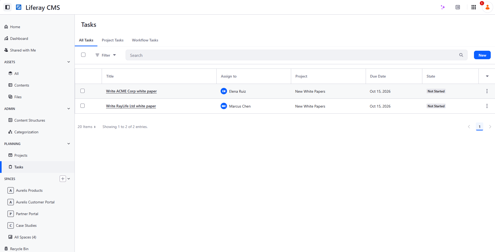
✅ 验证：对每个用户的账户执行 GET，确认所授予角色的权限与请求的完全一致，没有更宽泛的权限。打开营销活动，确认两个任务都显示正确的负责人和截止日期。
思路：何不创建 AI Personas，让它们通过 Liferay MCP 服务器与 CMS 交互，并使用 CMP 及其 API 协调各自的工作？
第 4 级 — 页面组合与账户管理（Page Builder、Data Sets、LDP）
4.1 — 受限访问的白皮书漏斗
🎯 列表页面 → 受限条目（潜在客户采集表单）→ 提交后重定向 → 完整文章 → 在 Liferay Data Platform 中跟踪事件。
🧩 manage-form-containers 🆕，manage-pages，scaffold-fragment，manage-analytics 🆕
📎 标准的受限内容模式；通过 MutationObserver → Analytics.track() 包装器实现 REQ-25（行为信号采集）。
📋 前提条件 — 连接 Liferay Data Platform（Analytics Cloud）：
- 在 LDP 中，将此实例添加为新的 Data Source。
- 复制生成的令牌（token）。
- 在 Liferay DXP 中，Control Panel → Instance Settings → Analytics Cloud → 粘贴令牌 → Save。
- 在 LDP 中，选择 Aurelis 站点以对其进行跟踪。
- 在 LDP 中重命名您的 Liferay 数据源，使其名称不那么通用。
⚠️ 此工作区由本次课程的所有学员共享。如果每个人的 Analytics.track() 调用都触发相同的原始事件名称，练习 4.2 的报告就会变成所有人下载记录的混杂，无法阅读。下面的提示词会让代理先询问您姓名的三个字母缩写，并将其作为事件名称的后缀 — 请不要跳过这一步，并记住您自己带后缀的名称，以便在练习 4.2 中使用。选择三个能代表您的字母：名字的首字母 + 姓氏的前两个字母（Fabian Bouché → FBO），如果您的名字由三部分组成，也可以每部分取一个字母（Andrew Lloyd Webber → ALW）。其他任意三个字母也可以，只要能明显识别出是您。
💬 提示词：
Using manage-pages, manage-form-containers and manage-analytics, build the Novacorp
white paper's full funnel, bound to the WhitePaper Content Structure, entirely
through the site-initializer tree.
Before doing anything else, ask me for my three-letter initials and use them
to suffix every custom event name below (e.g. whitePaperDownloaded_ABC for
initials ABC) — this workspace is shared across every participant, so a
bare, unsuffixed event name would collide with everyone else's.
- A "White Papers" listing page with one card per white paper, each linking
into its own entry.
- That entry's default page: a short teaser plus a lead-capture form (name,
email, company, role) writing into the existing Lead object, tagged with
source = 'whitepaper-novacorp'.
- A second, non-default page for the same entry: the full write-up.
- Once the form is submitted, take the visitor straight to that full write-up
page and record the visit as a tracked event, fired with a real
`Analytics.track()` call from the page, using my initials-suffixed event
name — not just a reachable page. The Liferay Analytics Cloud SDK is
already loaded site-wide once the prerequisite above is connected; don't
invent a separate tracking mechanism or fire the event from anywhere other
than the visitor's own browser session.
- Access expectations. Guest must be able to browse the listing, read an
entry, and submit the form; nothing beyond that should be readable or
writable anonymously. Concretely:
- Guest gets VIEW on the WhitePaper entries and on the folders that hold
them (folders carry their own permissions), plus DOWNLOAD_FILE if an
entry renders a file or image.
- Guest gets ADD_OBJECT_ENTRY on Lead, and never VIEW: submitted names
and emails must not be readable anonymously.
- The form must not depend on a picklist fetched over REST (Guest can't
read picklists): ship any options in the markup.
- The gate is a user-experience gate, not a security boundary: the
write-up URL stays reachable by Guest. Say so in your summary rather
than presenting it as protected.
Verify every point as an unauthenticated visitor (curl with no
credentials, then a fresh browser context), never with admin credentials,
and show me that an anonymous GET on the Lead collection returns no
entries.
📸 截图：列表页面、带有潜在客户采集表单的受限（默认）条目页面、完整文章页面，以及在 Liferay Data Platform 中显示的跟踪事件。


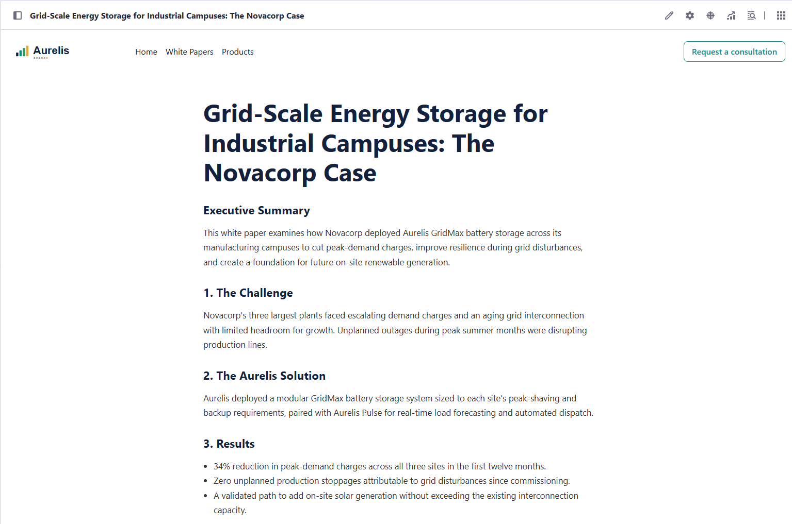
✅ 验证 — 以真实的匿名访客身份，而不是管理员会话：列表 → 点击 Novacorp → 确认进入受限模板 → 提交表单 → 确认已创建实际的 Lead 条目，且带有正确的 source 标记 → 确认重定向进入同一条目的完整文章 → 确认该事件确实出现在 Liferay Data Platform 中。
同时打开 Chrome DevTools → Network 选项卡，启用 "Preserve log"（否则普通的重定向会清空面板），按 Analytics Cloud 请求域名过滤，确认 Analytics.track() 调用作为真实的出站请求发出，并带有预期的事件负载。Analytics.track() 采用存储转发方式 — 它会立即将事件排入 localStorage 队列，由 SDK 按约 2 秒的间隔自行刷新发送，所以不要指望在重定向发生前看到请求；请在完整文章页面加载后的几秒内查找。无论如何也不要只依赖 LDP 仪表板，因为仪表板中条目的延迟并不能说明浏览器是否真的发出了该调用。
📸 截图：发送到 LDP 的自定义事件。

⚠️ 由于我们没有为代理提供任何关于如何渲染这些页面的严格指导，页面外观很可能与截图略有不同。
4.2 — 在 Liferay Data Platform 中监控白皮书下载
🎯 在 LDP 中保存一个 Event Analysis，跟踪您自己的 whitePaperDownloaded_<your initials> 事件，并按实际下载的白皮书进行细分 — 这是练习 4.1 跟踪事件的「意义所在」：只有当有人能看到聚合结果时，采集事件才有价值。
🧩 无需构建 — 纯粹在 Liferay Data Platform 中进行图形界面操作。manage-analytics 🆕 可以帮助您检查事件和 Event Analysis。
📎 REQ-25（行为信号采集）。
⚠️ 请分析您在练习 4.1 中带有姓名缩写后缀的事件名称，而不是原始的 whitePaperDownloaded — 此工作区是共享的，其他每位学员也在同时触发他们自己带后缀的变体。
📋 步骤（全部在 LDP 中完成 — 不涉及技能）：
- 先生成至少一个真实事件 — 以访客身份亲自走完练习 4.1 的完整漏斗（列表 → 表单 → 重定向 → 完整文章），以便有一个实际的
whitePaperDownloaded_<your initials>事件可供分析。空报告无法证明跟踪是否正确接通。 - 在 LDP 中：Events → Event Analysis。
- Analyze：
whitePaperDownloaded_<your initials>。Breakdown：添加pageTitle（Event）— 正是它让报告能够区分实际到达的是哪一份白皮书的完整文章，而不仅仅是一个原始总数。 - Save Analysis，名称中也要包含您的姓名缩写（例如 "White paper download - ABC"）— 已保存的分析与其他一切一样，在整个工作区内共享。
📸 截图：已保存的 Event Analysis 配置。
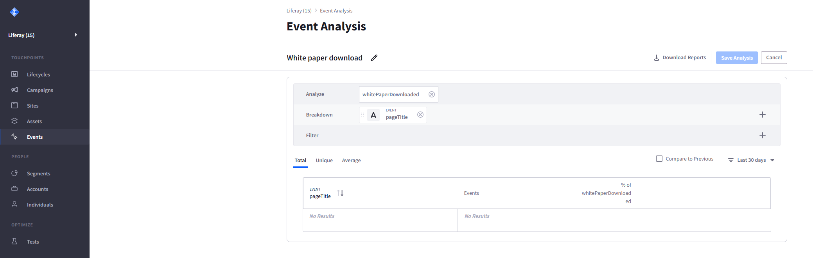
- 将范围设为 Last 24 hours，确认表格中显示真实的
pageTitle行（而不是 "No Results"），然后点击 Download Reports 并打开导出的 Event Analysis Report。
📸 截图：下载的 Event Analysis Report，显示真实且非空的细分结果。

✅ 验证：报告中的 pageTitle 行与您实际下载的白皮书一致，Total Events ≥ 1，并且下载的报告文件本身（而不仅仅是 LDP 实时界面）反映了同一行。
4.3 — 使用 Data Set 的 Account Intelligence 页面
🎯 一个显示 AccountIntelligenceProfile 条目的页面，按 combinedOpportunityScore 排序，每一行都链接到一个展示对应账户的小型 React 应用。
🧩 manage-pages，manage-data-sets 🆕，scaffold-client-extension，react-custom-elements
📎 REQ-27 — 按组合 Opportunity Score 对账户进行优先级排序。
📖 此时评分从何而来。您将用于排序的 combinedOpportunityScore 值，是练习 2.3 中随数据集加载的值。目前还没有任何机制计算它们；如果您现在编辑 fitScore，组合评分不会改变。练习 6.2 会将此计算自动化。本页面的预期顺序：Novacorp (83)、Solstice Manufacturing (55)、Alderbrook Manufacturing (51)、Norrland Foods (44)、Helix Retail Group (41)、Brightwater Hospitality (12)。
⚠️ Data Set 的数据源应为 AccountIntelligenceProfile，而不是 Account — Account 自身的 Headless 模块只支持按一小组硬编码字段排序，并拒绝按任何自定义/关联字段排序。Account 也既不支持 Display Page Template，也不支持 Form Container，因此行操作会链接到一个承载 React 应用的普通 Content Page。
⚠️ 需要 2026.Q3.6 或更高版本（LPD-102157 的修复）。Data Set 片段通过外部引用代码引用其 Data Set，直接来自站点初始化程序的 page-definition.json。在 2026.Q3.2 上，这需要一个热修复。
💬 提示词：
Create a Data Set of Account Intelligence Profiles, sorted by combined
Opportunity Score (highest first, and sortable by users), showing each
profile's account name, with a row action that opens /account-detail for
that profile.
Then add an 'Account Intelligence' page to the site initializer with this
Data Set on it. Deploy it and confirm the page renders real rows without
anyone touching the Page Editor.
Separately, build the /account-detail page: a small React customElement
Client Extension that reads profileId from the URL, fetches that
AccountIntelligenceProfile entry, then follows its own relationship field to
fetch the related Account — two Headless calls — and renders both live.
Access expectations: both pages are for Aurelis sales staff only. Create a
Regular Role 'Aurelis Sales' if it doesn't exist, with VIEW on
AccountIntelligenceProfile entries and on Accounts (company-wide), and an
active test user holding only that role (alex.moreau@aurelis.com). Remove
Guest VIEW from both pages in their page.json (an empty actionIds for
Guest), and give the Aurelis Sales role VIEW on them. Verify three ways: as
alex.moreau the page shows the six rows and /account-detail resolves; as
Guest both pages answer 404; as a signed-in user without the role the pages
are not accessible either. Don't verify as admin only.
📸 截图：按评分降序排列的实时 "Account Intelligence" 页面，以及 Page Editor 中显示该片段上已选中的 Data Set（没有任何人手动选择）。
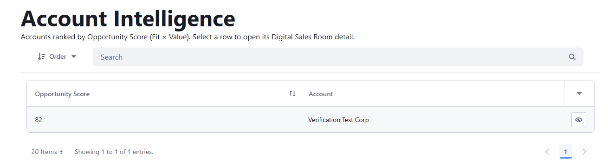
✅ 验证：打开 layouts/<page>/page-definition.json，确认片段的 itemSelector 通过 ERC 指定了 Data Set。在 Page Editor 中，确认该片段显示已选中此 Data Set，而无需任何人手动选择。加载实时页面，点击评分列的表头，确认排序确实重新排列了行，并确认账户名称列通过反向关系解析。触发一个行操作，确认 /account-detail 能实时解析档案及其关联账户。
4.4 — 让账户详情应用可编辑
🎯 扩展练习 4.3 中的 React 应用，让员工可以直接在同一页面上编辑账户的分类字段。
🧩 scaffold-client-extension，react-custom-elements
📎 REQ-22 — 这才是维护目标账户情报数据库的实际机制。
💬 提示词：
Extend the /account-detail React customElement built earlier so it
can also update the Account it displays. Add editable fields for sector,
size, country, and priorityTier, a Save button that PATCHes the change to
Account's own Headless API (/o/headless-admin-user/v1.0/accounts/{id}), and
re-fetch the entry afterward so the page reflects what was actually
persisted.
Access expectations: being signed in is not enough to edit. Grant the
Aurelis Sales role (created earlier) UPDATE on Accounts, and let the server-side
permission decide: hide the editor for users who can't update, but never
rely on the hidden UI as the protection. Verify as alex.moreau (the save
persists), as a signed-in user without the role (the PATCH is rejected), and
anonymously (401/403, never a silent success).
📸 截图：处于编辑模式的账户详情页面。
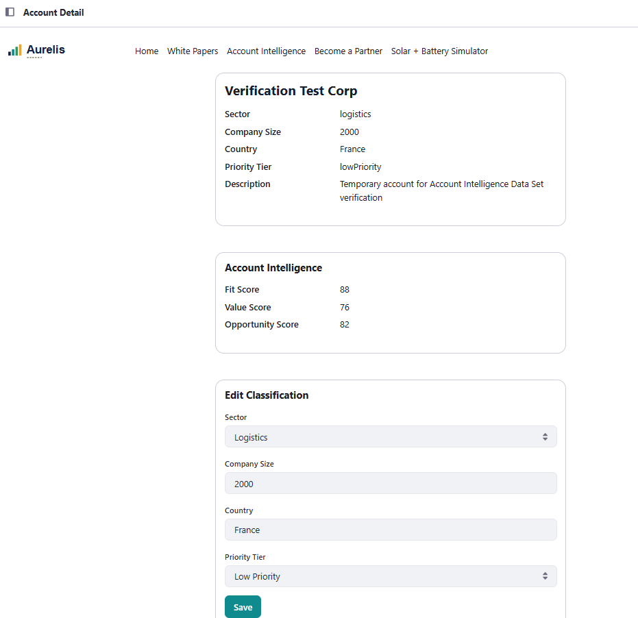
✅ 验证：修改一个字段，保存，重新加载 — 确认新值确实已持久化。确认对同一 PATCH 的未认证请求返回 401/403，绝不会悄无声息地成功。
第 5 级 — 访客交互（Form Containers、Objects、集成）
5.1 — 带实时企业查询的「Become an Aurelis Partner」表单
🎯 一个公开的 Form Container，用于创建 PartnerApplication 条目，并通过法国公共企业登记库预填数据。
🧩 manage-form-containers 🆕
📎 REQ-55 — 合作伙伴注册与申请受理。
💬 提示词：
Build a public Form Container bound to a new PartnerApplication object:
company registration number, company name, country, sector, message. When
the registration number is entered, call France's public company registry
(GET https://recherche-entreprises.api.gouv.fr/search?q=<number>) and
prefill name/sector/country from the match. Keep every prefilled field
editable — nothing submits automatically from the lookup.
Access expectations: the page and the form are public. Guest gets
ADD_OBJECT_ENTRY on PartnerApplication and nothing else: applications
contain company details and must be readable only by the Aurelis Sales role
(created earlier). Without ADD_OBJECT_ENTRY the Form Container renders nothing
for a visitor, with no error. If sector or country is a picklist, ship its
options in the markup: Guest can't read picklists over REST. Verify the
submission as an unauthenticated visitor, and show me that an anonymous GET
on the PartnerApplication collection returns no entries.
📸 截图：查询成功后的表单，显示已预填但仍可编辑的字段。

✅ 验证：使用 789 001 377（Liferay France 自己的 SIREN）提交，确认查询被触发，并预填了名称、行业和国家。再用一个查询不到结果的号码提交，确认表单仍允许您手动填写所有字段。确认两次提交都创建了真实的 PartnerApplication 条目，并且预填的字段在提交前仍可编辑。
⚠️ 仅适用于在法国注册的企业（SIREN）。已确认 CORS 是开放的，无需服务器端代理。登记库在服务器端限速为每秒 7 个请求，以打字速度使用完全足够。
第 6 级 — 定制开发：Client Extensions（Client Extensions、Object Actions、Glowroot）
这是内容最密集的一级，涵盖了为 Aurelis 确定的核心定制开发工作量。
6.1 — 太阳能 + 储能电池安装模拟器
🎯 两个相互独立的 customElement 客户端扩展（输入部件和结果部件），仅通过 Liferay.fire()/Liferay.on() 耦合。
🧩 scaffold-client-extension（×2，包括其中的「Messaging Between Widgets: Liferay.fire / Liferay.on」一节）。
📎 REQ-63–REQ-66 — 基于地址、可用面积和逐小时用电曲线，使用 Open-Meteo 的真实天气数据，计算太阳能和储能电池的配置规模。
💬 提示词：
Build the Aurelis Solar + Battery Installation Simulator as specified in the
Brief (section "Solar Panel + Battery Installation Simulator", Lot 1) — two
independent customElement Client Extensions on the same page, coupled only
through Liferay.fire()/Liferay.on(), never a shared DOM reference, module, or
config file.
(1) aurelis-simulator-inputs. Collects exactly three inputs: address
(geocoded via Open-Meteo's geocoding endpoint), usable surface area in m²,
and an hourly consumption profile for a typical day — an editable 24-bar
chart with an adjustable Y-axis scale. On any change, fire
Liferay.fire('aurelisSimulatorInputsChanged', {address, lat, lon, surfaceM2,
hourlyConsumptionKwh: [24 numbers]}) with the full current state.
(2) aurelis-simulator-results. A separate Client Extension subscribing via
Liferay.on('aurelisSimulatorInputsChanged', ...). For a visitor-selected
month (a real 12-month selector):
- Fetch that location's historical solar irradiance for that month from
Open-Meteo's historical archive API.
- Compute hourly solar production from surface area and irradiance.
- Simulate the battery: store daytime surplus, discharge it during hours
without sun. Compute and display a recommended battery capacity (kWh),
labeled as this build's own answer to an open question in the Brief.
- Render a 24-bar stacked chart per hour: solar / battery / grid, always
summing to that hour's consumption. Overlay battery state-of-charge (%) as
a line on the same chart.
- Recompute the whole chart whenever the month changes.
Out of scope, name explicitly in the README rather than deciding silently:
no cost/savings estimate (physical simulation only); no
efficiency/orientation/tilt inputs (name whatever fixed assumption is used as
an explicit constant); no geography restriction beyond Open-Meteo's own
coverage.
Inject each Client Extension's JS/CSS from the fragment's own js field
(document.createElement, appended to document.head, guarded by a data-*
marker) — a fragment's html field silently strips <script>/<link> tags.
Cache each (location, month) fetch; don't refetch on every unrelated redraw.
Access expectations: the simulator page is public. Both widgets must work
for an anonymous visitor: they call only Open-Meteo, never a Liferay API.
Verify it in a fresh, signed-out browser context.
📸 截图：带有手绘用电曲线的输入部件，以及结果部件在两个不同月份下的堆叠图。

✅ 验证：输入真实地址、合理的面积和手绘曲线，确认结果柱形图在每个小时的合计都正确。切换月份，确认能源构成确实发生变化。从页面上移除结果部件，输入部件应仍能独立工作，这证明了两者是基于事件耦合的。
💡 调整布局：默认情况下，两个部件上下堆叠，但并没有什么将它们绑定在这种排列上。由于它们只通过事件通信，您可以将它们并排放置或按任意网格排列，例如输入在左、结果在右。有两种做法：
- 在页面编辑器中：放置一个包含两个模块的 Grid 片段，然后将每个部件分别拖入一列。这种方式很快，但下一次运行站点初始化程序时会被覆盖，因为页面会根据其
page-definition.json重建。 - 在源代码树中：让代理将页面的
page-definition.json改为Section → Row → Column布局，列宽合计为 12，并在移动端将各列堆叠显示。这样，布局在每次重新预配后都能保留。
6.2 — Opportunity Score 客户端扩展
🎯 一个 objectAction 客户端扩展，根据 Fit、Value 和 Intent 使 combinedOpportunityScore 保持最新。当有 Lead 进入时，它还会将该 Lead 关联到正确的 Account，使访客的兴趣真正计入该账户的评分。
🧩 scaffold-client-extension（类型 objectAction）、setup-oauth
📎 REQ-26（将已识别的访客匹配到其所属组织）、REQ-27 — Aurelis 的评分公式是其自身的业务逻辑，Liferay 没有原生功能可以计算它。
📖 有哪些变化。到目前为止，combinedOpportunityScore 只是在练习 2.3 中加载的普通数据（参见 4.3 中的说明），而来自白皮书表单（4.1）的 Lead 只以自由文本形式携带公司名称，没有关联到任何 Account。从现在起，一个客户端扩展处理两个触发器：
- 添加或更新档案时：重新计算该档案的评分。
- 添加 Lead 时：查找名称与 Lead 的
company匹配的 Account，将 Lead 关联到该账户（这会增加该账户的numberOfLeads），然后重新计算该账户的评分。
公式来自「The account scoring story」：min(100, round(fitScore × valueScore / 100 × (1 + min(numberOfLeads, 5) / 10)))。在尚未关联任何 Lead 时，它得出的正是数据集中的值，因此在有 Lead 进入或有人修改 Fit 或 Value 评分之前，排名不会变化。
📖 为什么这个客户端扩展需要两个 OAuth 应用。到目前为止，客户端扩展回调 Liferay 时使用的是 Liferay 发给它的令牌，该令牌以触发操作的用户身份执行。而在这里，Lead 通常由提交白皮书表单的匿名访客创建，因此该令牌属于 Guest，而 Guest 无法读取 Account，也无法编辑 Lead（每次调用都返回 403）。因此，该客户端扩展拥有自己的身份：
| OAuth 应用 | 类型 | 用途 |
|---|---|---|
User agent（每个 objectAction 本来就需要） |
oAuthApplicationUserAgent |
让 Liferay 调用微服务并识别触发操作的用户 |
| Headless server | oAuthApplicationHeadlessServer |
微服务自己的服务账户，在每次回调 Liferay 时通过 client_credentials 使用 |
headless server 的服务账户是 Administrator：只有其作用域列表限制它能做什么，因此请尽可能缩小范围。
⚠️ 微服务绝不在源代码或配置中保存凭据。部署时，DXP 会将 headless server 的客户端 ID 和密钥以文件形式写入 bundles/routes/default/<project-name>/（在 Liferay Cloud 上为 /etc/liferay/lxc/ext-init-metadata）。每次重新部署都会同时更改两者，之前签发的令牌随后会得到 401。因此，微服务每次请求令牌时都会读取这些文件，遇到 401 时重新读取并重试一次。
💬 提示词：
Scaffold an objectAction Client Extension (a Node microservice) that keeps
AccountIntelligenceProfile.combinedOpportunityScore up to date:
combinedOpportunityScore =
min(100, round(fitScore * valueScore / 100 * (1 + min(numberOfLeads, 5) / 10)))
where numberOfLeads is the Aggregation field on the profile's Account (it
comes back as a string: parse it).
Attach the same Client Extension to three object actions and tell the
callers apart by objectDefinitionId:
- AccountIntelligenceProfile, onAfterAdd and onAfterUpdate: recompute that
profile's score.
- Lead, onAfterAdd: find the Account whose name exactly matches the Lead's
company (case-insensitive; escape single quotes in the filter). If there's
no match, do nothing. Otherwise link the Lead to that Account, then
recompute that Account's profile score.
Only PATCH a score when the value actually changes, so the write-back
doesn't re-trigger the action in a loop.
Leads are created by anonymous visitors, so don't call back into Liferay
with the inbound token. With setup-oauth, add an
oAuthApplicationHeadlessServer and use client_credentials for every call
back, with only these scopes: c_accountintelligenceprofile.everything,
c_lead.everything, Liferay.Headless.Admin.User.everything.read. Keep the
oAuthApplicationUserAgent the objectAction entry requires.
Read the headless server's client ID and secret from the routes files DXP
writes on deploy, each time a token is requested (never cached at startup,
never copied into the project), and on a 401 re-read them and retry once.
✅ 验证：
- Fit/Value 变化：将 Helix Retail Group 的
fitScore从 55 改为 95，确认其combinedOpportunityScore变为 71（95 × 75 / 100，无 Lead）。在 Account Intelligence 页面上，Helix 现在排名第二，仅次于 Novacorp。改回 55，确认评分恢复为 41。 - Intent：在隐私窗口（匿名）中，以
Norrland Foods作为公司名称提交练习 4.1 的白皮书表单。确认新的 Lead 已关联到 Norrland Foods Account，该 Account 返回"numberOfLeads": "1"，且 Norrland 的评分从 44 变为 48。再提交一次：评分达到 53，Norrland 的排名超过 Alderbrook Manufacturing（51）。最后用一个不匹配任何 Account 的公司名称再提交一次，确认该 Lead 保持未关联状态，且没有任何评分变化。 - 为什么需要 headless server：临时让微服务改用传入的令牌，再次以匿名方式提交表单，确认回调失败并返回
403。然后改回来。 - 作用域：只给 headless server 分配
Liferay.Headless.Object.everything，确认每次回调都失败并返回403。恢复上述三个作用域，确认功能恢复正常。 - 凭据轮换：在不重启微服务的情况下重新部署客户端扩展，提交另一个 Lead，确认仍能正常工作（微服务在遇到
401后重新读取了新凭据）。
6.3 — 使用 Glowroot 衡量一次 Lead 提交的开销
🎯 用测量数据而不是阅读代码来回答一个问题：当匿名访客提交白皮书表单时，访客是否要等待 Opportunity Score 客户端扩展（6.2）执行完才能看到下一个页面？以及单个 Lead 总共会触发多少次调用？
🧩 glowroot-performance 🆕
📎 NFR — 公开访问流程的性能；用数据检验 6.2 的设计（循环保护、触发器）。
📖 Lead 进入时会发生什么。一次表单提交会引发一连串操作：
- Liferay 保存 Lead。
onAfterAddObject Action 调用客户端扩展的微服务。- 微服务回调 Liferay：按名称查找 Account，PATCH Lead 以建立关联，读取
numberOfLeads，PATCH 档案的评分。 - 这些 PATCH 又会触发更多操作：Lead 上的
onAfterUpdate，档案上的onAfterUpdate。6.2 中的保护机制应阻止它们再次写入。
这些步骤在浏览器中都不可见。Glowroot 是运行在 Liferay JVM 内部的 APM 代理，它将每个请求记录为一个事务，包括其耗时、SQL 查询和对外 HTTP 调用。glowroot-performance 技能通过 Glowroot 的 MCP 服务器读取这些数据。
📋 前提条件（已为您准备好）：工作区的 setenv 文件会在每次启动时挂载 Glowroot 代理（由练习 0.2 中的 blade server init 安装），.mcp.json 会在 http://localhost:4000/o/glowroot/mcp 注册其 MCP 服务器。如果 Claude Code 请您批准 glowroot MCP 服务器，请接受。检查 http://localhost:4000/o/glowroot 能否打开。
💬 提示词：
Using glowroot-performance, measure what a single Lead submission costs.
First, in a private window (anonymous), I'll submit the white paper form built
earlier three times with "Norrland Foods" as the company. Tell me when
you're ready, then wait for me to say it's done.
Then, over that time window:
1. Check the CPU regime first and tell me whether the timings are reliable.
2. Find the form submission transaction. Give its duration and say whether
the call to the Opportunity Score microservice (localhost:3101) appears
inside it as a service call. Conclude: does the visitor wait for the
Client Extension, yes or no?
3. List the transactions caused by the microservice calling back into Liferay
(accounts lookup, Lead PATCH, profile PATCH, and anything else), with
count and average duration.
4. Confirm the loop guard built earlier holds: exactly one profile score PATCH per Lead.
5. Count the SQL queries behind one submission, end to end.
Every claim must cite a Glowroot number and a trace id or transaction name,
with the glowrootUrl so I can open it. If a fast transaction left no trace,
lower the slow-trace threshold for that one transaction only, rerun, then put
it back and tell me you did. Don't create instrumentation and don't run
anything that pauses the JVM.
✅ 验证：
- 打开 Claude 给出的每个
glowrootUrl，在 Glowroot UI 中亲自核对数据：Transactions → Web，然后查看追踪记录。 - 「访客是否要等待？」的答案必须基于追踪记录，而不是基于代码应有的行为。如果微服务调用出现在提交的追踪记录内，访客每次提交都要承担其延迟。讨论您会做哪些修改（例如，将该操作改为异步）。
- 三次提交应产生三次档案评分 PATCH，而不是六次。更多则说明保护机制没有生效。
- 如果 Claude 调低了慢追踪阈值，请在 Glowroot UI 中确认它已恢复为原始值。
⚠️ 此处 Glowroot 的 UI 和 MCP 服务器没有身份验证，且仅监听 127.0.0.1。切勿通过 ngrok 或任何其他隧道暴露 4000 端口。
💡 本练习之外：本练习只用 Glowroot 回答一个具体问题，但同样的方法可通过 glowroot-performance 技能，用于在 Claude Code 中进行任何性能调查。该技能可以：
- 读取慢追踪记录；
- 读取特定事务的线程剖析，可按事务类型和时间窗口过滤；
- 读取事务背后的 SQL 查询；
- 读取内存和 CPU 使用情况，以及 JMX 指标；
- 以编程方式为 Java 方法添加新的插桩，以便对其进行剖析。
我们常用的一种技巧：抽取一批事务样本，在其线程剖析的调用栈中寻找热点，然后为这些方法添加插桩，了解其内部真正发生了什么。
这依赖于一个提供 MCP 服务器的 Glowroot 修改版本。它是全新的：已在 2026.Q3 上运行良好，目前正在更广泛地测试中，因此可能会遇到一些不完善之处。
第 7 级 — 安全与权限，以及原生 AI Hub 聊天机器人（AI Hub）
7.1 — 按等级限制合作伙伴内容的访问
🎯 三个累进式的 Regular Role（Partner - Bronze/Silver/Gold，Gold ⊇ Silver ⊇ Bronze），根据每个 PartnerDocumentation 条目的 minimumPartnerTier，授予条目级的 View 权限。
🧩 manage-roles-permissions
📎 REQ-57 — 分等级的合作伙伴赋能内容。
📖 Aurelis 将其安装合作伙伴认证为 Bronze、Silver 和 Gold 三个等级，每个等级可以解锁更多的 Partner Portal 内容：例如，Gold 合作伙伴可以看到机密的产品路线图。在练习 3.1 中，您导入了合作伙伴文档，其 minimumPartnerTier 只是普通数据，目前还没有任何机制强制执行它。本练习将把这个字段变成真正的访问控制。
💡 已为您做出的设计决策（源文档未作规定，因此由提示词确定）：
- 累进式，而非互斥式 — Gold 合作伙伴可以看到 Bronze + Silver + Gold 的内容。
- 「Gold-only section」文档 — 将整个条目标记为 Gold 等级，而不是拆分为两个条目。这会过度限制该文档中非机密的部分；请接受这一权衡，而不是增加拆分和重新导入的步骤。
💬 提示词：
Using manage-roles-permissions, create three Regular Roles for the partner
tiers — Partner - Bronze, Partner - Silver, Partner - Gold. Then, for every
PartnerDocumentation entry in the Partner Portal Space, GET its current
permissions first, then PUT entry-level View permission driven by that
entry's own minimumPartnerTier field, cumulatively: a Bronze-tier entry
visible to all three roles, a Silver-tier entry visible to Silver and Gold,
a Gold-tier entry visible to Gold alone. The PUT body is a bare array (not
wrapped in a "permissions" key) of {actionIds, roleExternalReferenceCode,
roleName, roleType} objects. This call is a full replace: include every
existing role grant that should survive (Owner, any admin role) alongside
the tier grants. Tag the "confidential roadmap briefing with a Gold-only
section" entry Gold-tier as a whole — don't split it.
Access expectations: after the PUT, no Guest, User or Site Member grant may
remain on these entries, otherwise the tiers protect nothing. The three
roles also need VIEW on the Space's folders. Create two active test users
who can sign in: partner.bronze@aurelis-partner.example (Partner - Bronze
only) and partner.gold@aurelis-partner.example (Partner - Gold only). Verify
as each of them and anonymously, never as admin, and report the entry count
each one sees. Tell me explicitly that entries added later get no tier
grant by themselves.
✅ 验证 — 以真实的测试账户登录，不要用 Basic Auth，也不要用管理员：Bronze 等级的账户永远不应看到 Gold 或 Silver 条目。Gold 等级的账户应能看到 Bronze、Silver 以及 Gold 条目。
7.2 — 搭建「Energy Advisor」聊天机器人：公开的产品知识
🎯 一个基于 Product Content Space 的公开 AI Hub 聊天机器人，并在未登录的会话中进行验证。
🧩 manage-roles-permissions（Guest 可见性）、manage-cms 🆕、manage-ai-hub 🆕（它会为必须在 AI Hub 自身控制台中手动完成的工作提供一份构建清单，然后验证结果）。
📎 REQ-36/REQ-61（公开的 Energy Advisor，第 1 阶段问答）、REQ-45（基于 RAG 的 Product Knowledge Agent）。
⚠️ NFR-06：这一代 AI Hub 仅支持文本，不支持语音和图像。
⚠️ 前提条件 — 为 Guest 授予 Product Content 的 View 权限。公开聊天机器人的公开程度取决于其内容的权限。这种失败是静默的：管理员测试时看到的是有依据的回答，而真正的匿名访客什么也得不到。请在构建下面任何内容之前先完成此步骤。
💬 提示词：
Using manage-roles-permissions and manage-cms, make the Product Content
Space's entries readable by anonymous visitors, so a public chatbot can
retrieve them through search.
Access expectations: Guest gets VIEW, company-wide, on the product structure
entries in the Product Content Space (whatever that structure was called
when it was created earlier), and VIEW on that Space's folders (folders carry their own
permissions). Add DOWNLOAD_FILE only if those entries hold files. Grant
nothing on the Customer Documentation, Partner Portal or White Papers
Spaces. Reindex afterwards, since the chatbot reads the search index.
Verify as an unauthenticated visitor: an anonymous request lists the product
entries, and an anonymous request on a Customer Documentation entry returns
nothing.
⚠️ 为代理提供依据的两种方式 — 请使用第二种。AI Hub 的 Data Sources 选项卡只能爬取外部网站 URL，并且不感知权限。由 Search Blueprint 支持的 Liferay Search 节点直接查询 DXP 自身的、感知权限的搜索索引，这是两者中唯一能够访问 DXP 内部内容的方式。
📋 步骤（全部在 AI Hub 或 DXP 的控制台中完成，不涉及技能）：
- AI Hub 已在练习 3.3 中连接，只需确认连接仍然有效。
- 构建 Search Blueprint。Global Menu → Search Experiences → Blueprints → Add，命名例如 Aurelis Products Blueprint。Scope → Select Scope：选择 Product Content Space。也可以将其缩小到
ProductSheet结构：Source → Searchable Types and Subtypes → Selected Types → Select Asset Types。保存，并记下该 Blueprint 的 External Reference Code。
📸 截图：已填写范围和结构的 Blueprint 配置界面。

⚠️ 您的结构名称可能不同。ProductSheet 是我们运行练习 3.1 时代理所选的名称。该练习并未强制规定结构：代理是根据本工作区中的文档推断出每个结构的，因此在您的项目中，其名称（以及字段）可能不同。请使用您的 Product Content Space 中实际存在的产品结构，即 CMS 管理界面中显示的结构（练习 3.2）。
- 构建 Search Worker 代理。Agent Builder → Liferay Search agent，然后使用 Duplicate 操作：
- Title：例如 Aurelis Products Liferay Search。
- Description："Retrieval worker for Aurelis product knowledge — solar, GridMax, EV charging, Pulse, energy transformation programs. The request sent to this agent is used directly as the search query. Before invoking it, formulate a short, precise keyword query — never the visitor's original question verbatim. Prefer product names/codes over prose."
- Input Variables：
request。 - Output Variables：
response（只会使用第一个输出变量，切勿列出多个）。 - 启用该代理并点击 Save，然后再编辑工作流。
📸 截图：产品搜索 worker。

-
编辑其工作流：
Start → Liferay Search → End，并编辑 Liferay Search 节点的配置：- Prompt："Analyze the retrieved product content and return factual evidence relevant to the request. Use only the retrieved information. Do not invent or infer missing product facts. Return concise findings; do not try to produce the final answer, as your response will be used as evidence by another agent."
- Input Variables：
[{"name": "request", "type": "string"}]。 - Output Variables：
[{"name": "response", "type": "string"}]。 - User Message：
{{request}}。 - RAG config：
{"contentRetriever": {"key": "liferay", "blueprintExternalReferenceCode": "<Blueprint ERC>"}}。 - Tools：
[]。
📸 截图：产品搜索 worker 的工作流。
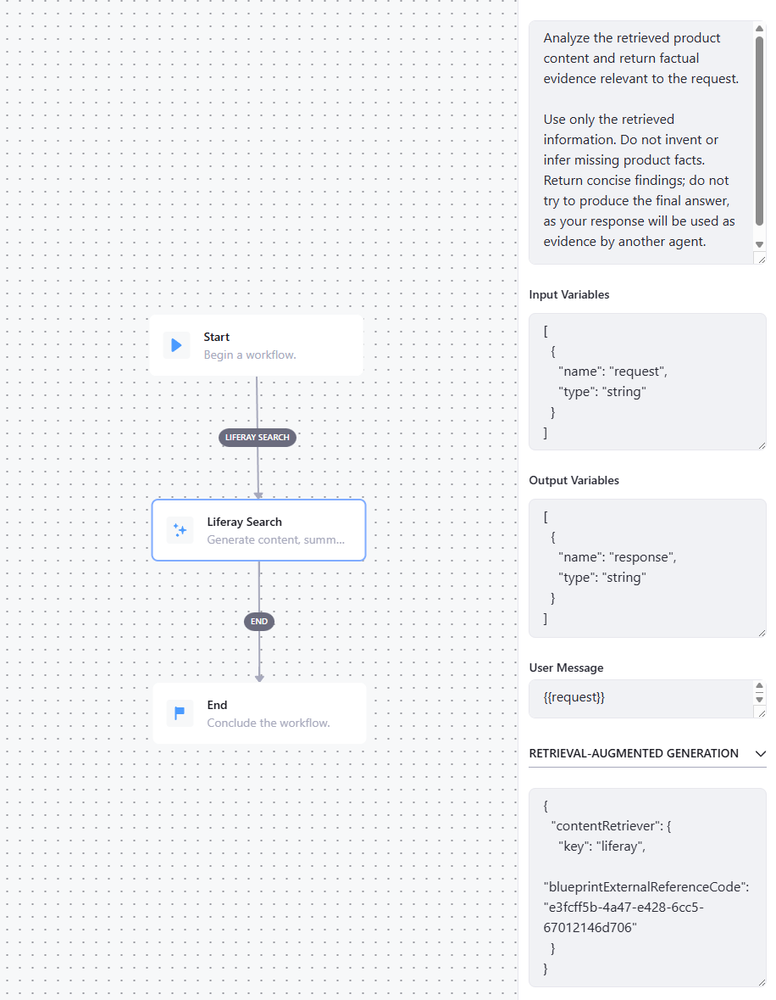
- 构建 Answer Builder 代理。这是第二个独立的代理。
- Title：例如 Aurelis Answer builder agent。
- Description："Always invoke this agent last, after research is complete, passing the original request plus everything gathered — never use it for retrieval itself."
- Input Variables：
originalRequest,gatheredInformation。 - Output Variable：
response。 - Data Sources：将 Assigned Sources 留空。
- 启用该代理并点击 Save，然后再编辑工作流。
📸 截图：Answer Builder 代理。

- 编辑其工作流：
Start → LLM → End，不要添加 Liferay Search 节点。- Prompt：
Build a clear, direct answer to the original request from the gathered information alone; never invent unsupported facts; say explicitly when the evidence doesn't cover part of the question rather than guessing. Make synthetic responses, ask the user if he wants more details. - Input Variables：
[{"name": "originalRequest", "type": "string"}, {"name": "gatheredInformation", "type": "string"}]。 - Output Variables：
[{"name": "response", "type": "string"}]。 - User Message：
Original user request:\n{{originalRequest}}\n\nGathered information:\n{{gatheredInformation}}。 - RAG config：
[]。 - Tools：
[]。
- Prompt：
📸 截图：Answer Builder 代理的工作流。
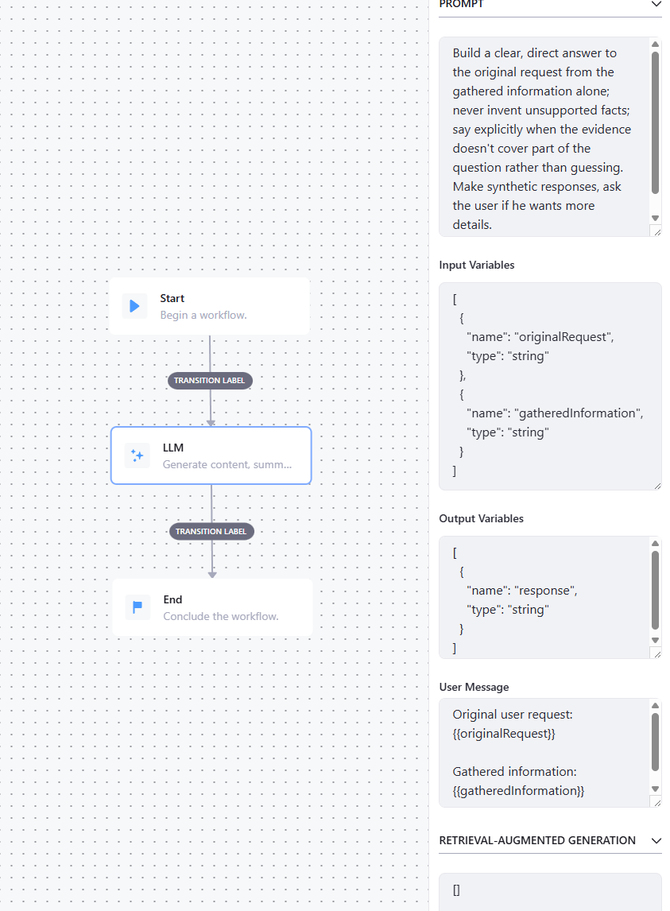
- 创建聊天机器人。AI Hub → Chatbots → New Chatbot。
- Title：例如 Aurelis Chatbot FBO（使用您自己的姓名首字母）。
- External Reference Code：设置一个带有您姓名首字母、易读的值，例如
AURELIS_CHATBOT_FBO，并记下来：Click to Chat（第 8 步）和自定义部件（练习 9.1）都需要它。 - Enable Chatbot：开启。
- Assigned Agents：同时添加 Search Worker 和 Answer Builder 两个代理。
- 设置 Intro Message。保存。
📸 截图：Aurelis RAG 聊天机器人。
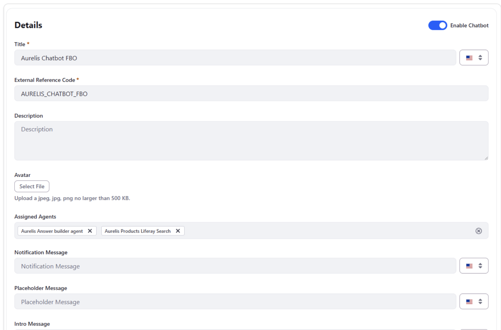
-
通过 Click to Chat 将聊天机器人放到站点上。Click to Chat 是 Liferay 的原生聊天集成，AI Hub 是其支持的提供方之一。它为每个站点挂载一个聊天机器人，显示在该站点的每个页面上，无需构建或放置任何片段。需要在两个地方进行配置：
a. 为实例启用。Control Panel → Instance Settings → Click to Chat： - 开启 Enable Click to Chat。 - Site Settings Strategy：选择 Inherit or Override，使每个站点都可以声明自己的聊天机器人。 - 将 Chat Provider 和 Chat Provider Account ID 留空：聊天机器人将在下面按站点设置。 - 保存。
📸 截图：在实例级别启用的 Click to Chat。

b. 将聊天机器人挂载到 Aurelis 站点。Site Menu → Configuration → Site Settings → Click to Chat： - 开启 Enable Click to Chat。 - Chat Provider：AI Hub。 - Chat Provider Account ID：您的聊天机器人的 External Reference Code（AI Hub → Chatbots → 第 7 步中的聊天机器人），例如
AURELIS_CHATBOT_FBO。忽略该字段下方的 Get my account token for AI Hub 链接：此字段只需要聊天机器人的 ERC。 - 开启 Guest Users Allowed：这是一个公开聊天机器人，下面的验证在未登录状态下进行。 - Hide in Control Panel：由您决定。开启后，聊天气泡不会出现在管理界面上，只在站点页面上显示。 - 保存。📸 截图：Aurelis 站点的 Click to Chat 设置，包含 AI Hub 和您的聊天机器人 ERC。

重新加载站点的任意页面：聊天气泡会出现在所有页面上。
⚠️ 每个站点一个聊天机器人。Click to Chat 无法在部分页面上放置一个聊天机器人，而在其他页面上放置另一个。如有此需要，请使用下面的替代方案。
💡 替代方案 — 在片段中嵌入代码片段。聊天机器人分配了代理后，其在 AI Hub 中的配置界面还会提供一段可直接使用的 HTML/JS 代码片段。将其复制到一个新的片段中（Design → Fragments → 在某个 Fragment Set 中新建 Fragment → 粘贴到 HTML/JavaScript 编辑器），将该片段拖到您需要的页面上并发布。这种方式按页面放置聊天机器人，但每个页面都需要单独放置。不要在同一站点上将其与 Click to Chat 同时使用，否则访客会看到两个聊天气泡。
✅ 验证 — 在无痕/未登录的会话中，向在线的聊天机器人提出以下问题：
- "What is Aurelis GridMax and what does it do?" — 有依据
- "What does the Solar Energy product line cover?" — 有依据
- "If I'm interested in combining solar panels with EV charging, what would Aurelis offer me?" — 需要对两份产品资料进行真正的综合
- "What's the guaranteed response time for a Critical severity support issue for Aurelis GridMax?" — 反向验证：该承诺位于 Customer Documentation Space 中的 Customer Support & SLA Handbook，而不在 Product Content 中；机器人应表示不知道，而不是编造一个数字。
提问时，请观察位于 http://localhost:4040 的 ngrok 检查器（练习 0.2）：每个问题都应显示 AI Hub 的 Liferay Search 节点调用了您的 DXP，并返回 200。如果完全没有请求，说明代理从未访问到 DXP（请检查 RAG config 中的 Blueprint ERC 和 AI Hub 连接）；如果返回 401/403，说明请求到达了 DXP 但被拒绝。
7.3 — 为 Energy Advisor 扩展按账户区分的机密信息
🎯 扩展 7.2 中的聊天机器人，通过直接 API 调用回答按账户区分的机密信息，并验证一个账户永远看不到另一个账户的数据。
🧩 manage-objects（AccountRolloutDetail）、manage-ai-hub 🆕（HTTP Request 代理和 OAuth2 作用域授权仍需在 AI Hub 或 DXP 的控制台中手动完成；该技能会告诉您如何设置并进行验证）。
📖 7.2 中的 Energy Advisor 只了解公开的产品资料。Aurelis 的客户，例如 Novacorp 或 Solstice Manufacturing 这样的公司，也希望向它询问自己的项目：安装了什么、按什么时间表进行、采用哪些协商条款，以及他们的客户经理是谁。这些信息对每个客户都是机密的。在本练习中，您将按 Account 存储这些信息，并让聊天机器人获取它们，使已登录的用户只会得到自己公司的答案。
📋 1. 数据设置。
💬 提示词：
Using manage-objects, create the AccountRolloutDetail Custom Object, related
oneToMany from Account (name the relationship accountToRolloutDetails).
Fields: installationScope (Text), phasedSchedule (Text), negotiatedTerms
(Text), accountManagerName (Text).
Enable Account Restriction on this object definition, with the Account
Restricted Field set to the relationship to Account. This is what makes
GET /o/c/accountrolloutdetails return only the entries belonging to the
caller's own account instead of every account's data — without it, REQ-35
(one account must never see another's data) is not actually enforced,
whatever the HTTP Request node's URL/filter looks like.
Then, using the Liferay MCP server, read
context-source/historical-rollout-data.csv and import each row as a real
AccountRolloutDetail entry, resolving the matching Account by company name
yourself.
Finally, create two test users so the verification below has someone real to
log in as: Sophie Martin (sophie.martin@novacorp.example), associated to the
Novacorp Account, and Marcus Webb (marcus.webb@solsticemanufacturing.example),
associated to the Solstice Manufacturing Account. Each must be a genuine
member of their own account and nothing else — this is what Account
Restriction actually filters on, so a user who isn't a real account member
won't resolve to any rollout data at all, restricted or not.
Access expectations: Account Restriction only filters results, it grants
nothing. Make sure members of an account actually hold VIEW on their own
account's AccountRolloutDetail entries, and tell me which role carries that
grant. Grant Guest nothing on this object, and give no company-wide VIEW
that would bypass the restriction. Both users must be active and able to
sign in. Verify as each of them: Sophie gets only Novacorp's entry, Marcus
only Solstice's, and an anonymous request gets nothing.
⚠️ 防止一个客户看到另一个客户数据的是 Account Restriction，而不是 HTTP Request 节点的 URL。下面 HTTP Request 节点使用的 GET /o/c/accountrolloutdetails 没有任何按账户的过滤；它完全依赖对象本身将结果集缩小到调用者自己的账户。如果跳过这个开关，每个账户都会通过完全相同的调用看到其他所有账户的部署数据。用管理员用户快速测试不会暴露这个漏洞，因为管理员本来就不受限于任何一个账户。这也是为什么下面的 ✅ 验证坚持要以真实的非管理员账户用户进行测试，绝不使用管理员。
📋 2. 构建并连接 HTTP Request 代理（AI Hub 控制台）：
- Agent Builder → New Agent：
- Title：例如 Aurelis Current User's account contract information Agent。
- Description："Use this agent to fetch information about the current user's account's contracts." 聊天机器人的 Supervisor 根据此描述选择要调用的代理，因此不要写得含糊。
- Input Variables：
request。 - Output Variable：
response。 - 启用该代理并点击 Save，然后点击 Edit Workflow：
Start → HTTP Request → LLM → End。
📸 截图：账户信息代理。
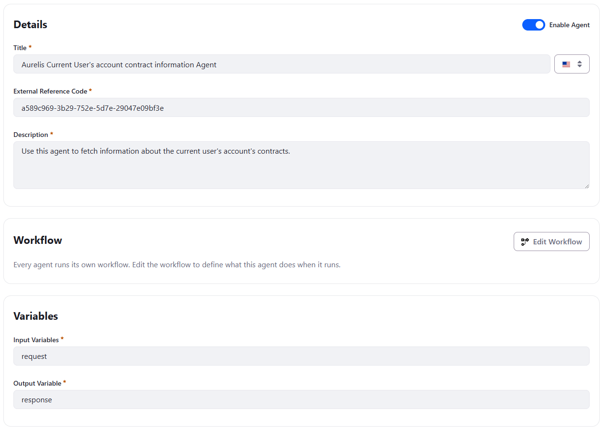
- HTTP Request 节点：
- Method：
GET - URL：
{{aiHubCellLiferayDXPURL}}/o/c/accountrolloutdetails - Request body：留空
- Input Variables：
[{"name": "aiHubCellLiferayDXPURL", "type": "string"}]。 - Output Variables：
[{"name": "rolloutDetails", "type": "string"}]。 - 没有自定义请求头字段，Bearer 令牌会通过 AI Hub↔DXP 的 OAuth2 连接自动附加。
📸 截图：账户信息代理的工作流：HTTP Request 节点。
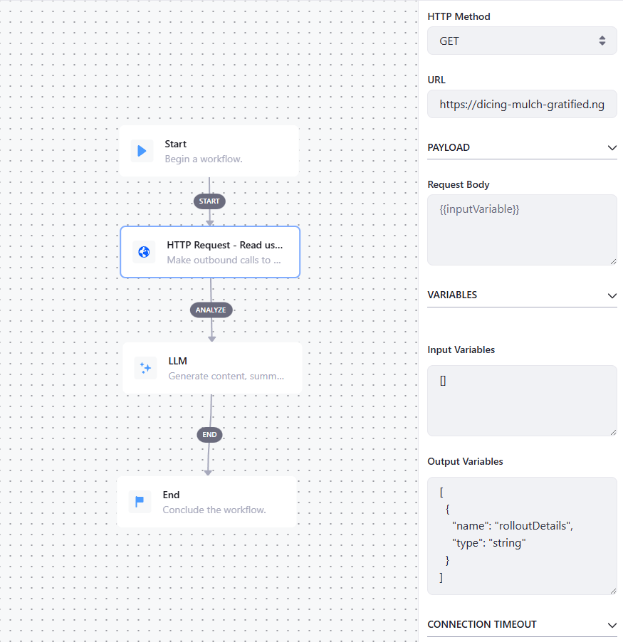
注意：aiHubCellLiferayDXPURL 是一个可注入的上下文变量，包含您的 Liferay DXP 环境的 URL。
- LLM 节点：
- Prompt：
You are an agent in charge of responding to a request about a user's contracts, using your contract knowledge. - Input Variables：
[{"name": "request", "type": "string"}, {"name": "rolloutDetails", "type": "string"}] - Output Variables：
[{"name": "response", "type": "string"}] - User Message：
This is what you know about the user's contracts:\n{{rolloutDetails}}\n\nThis is what you are specifically asked to do:\n{{request}}。请保留其中的{{request}}：没有它，LLM 永远看不到问题。 - RAG config：
[]。 - Tools：
[]。
📸 截图：账户信息代理的工作流：LLM 节点。
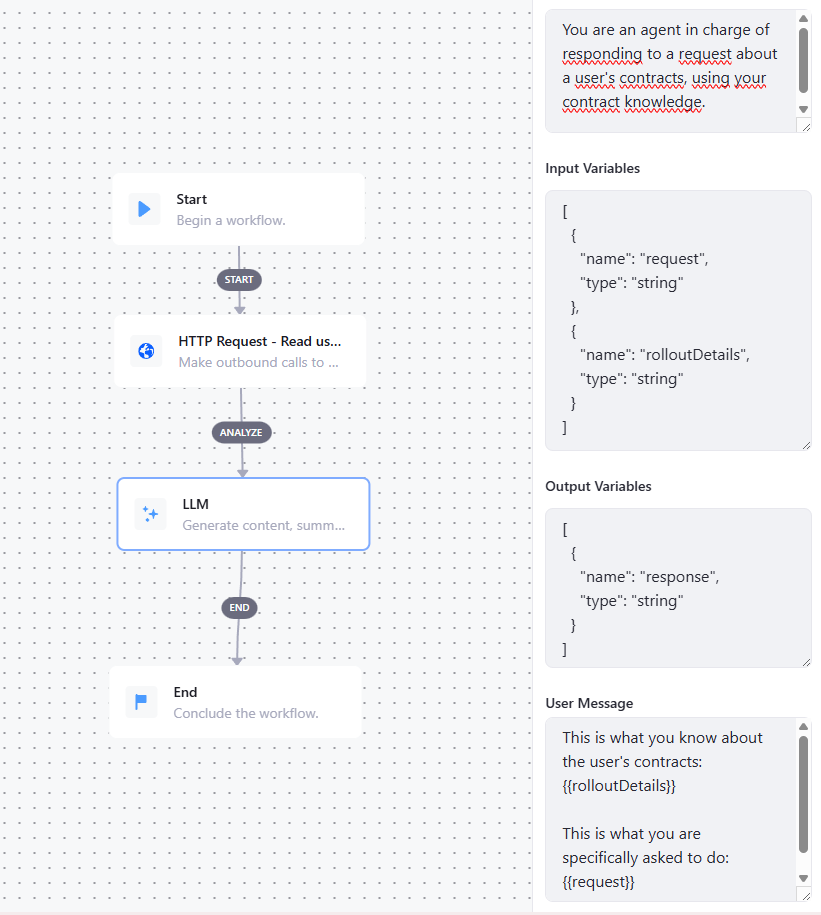
-
将此代理添加到我们之前创建的聊天机器人中。
-
与聊天机器人交互，预期会失败。如果您在 http://localhost:4040 监控 ngrok，会看到
403响应。这不是缺陷：它证明调用已到达 DXP 并被正确拒绝。 -
现在授予作用域。Control Panel → OAuth 2 Administration → AI Hub Cell 应用 → Scopes → 添加
c_accountrolloutdetail.everything.read。保存，然后注销并重新登录，使新令牌获得新的作用域。
📸 截图：AI Hub Cell 应用的 Scopes 选项卡，已授予新作用域。
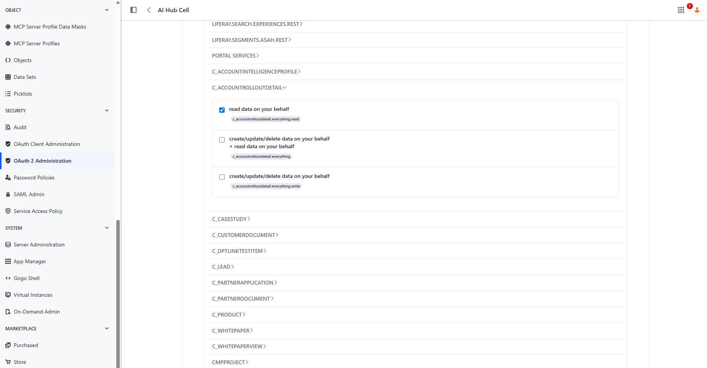
- 再次进行端到端测试。与属于以下账户之一（或不属于任何账户）的最终用户进行对比。在 ngrok 检查器中，每个问题现在都会显示一个
GET /o/c/accountrolloutdetails请求，返回200而不是403。
📋 测试数据：
| 账户 | 机密数据 |
|---|---|
| Novacorp | 42 个站点，三阶段时间表，€8.2M，Camille Laurent |
| Solstice Manufacturing | 180 块面板 + 12 台充电桩，两阶段时间表，4 小时 SLA，Diego Fernandes |
✅ 验证 — 分别以每个真实测试账户登录，绝不使用管理员：
- Sophie Martin（Novacorp）："How many sites are in the current rollout phase?" / "What price did we negotiate?" — 两者都应正确地基于数据回答。
- Sophie Martin，反向验证："What's Solstice Manufacturing's SLA response time?" — 不得返回任何来自 Solstice 数据的内容。
- Marcus Webb（Solstice）：对应的一组镜像问题，外加一个询问 Novacorp 合同金额的反向验证。
- 针对每次调用，独立检查 HTTP Request 节点实际解析出的身份和过滤条件，而不仅仅是聊天机器人的最终回答。过滤错误的请求碰巧得出正确答案，是一种真实存在、值得排除的失败模式。请在 ngrok 检查器（http://localhost:4040）中进行：打开每个测试用户提问对应的
GET /o/c/accountrolloutdetails请求，阅读其响应正文。以 Sophie Martin 登录时，其中只能包含 Novacorp 的条目；以 Marcus Webb 登录时，只能包含 Solstice 的条目。
第 8 级 — Digital Sales Room（DSR）
8.1 — 从 Account Intelligence 到 Digital Sales Room，端到端流程
🎯 打开 Account Intelligence 页面，根据 combinedOpportunityScore（在练习 2.3 中加载，自练习 6.2 起计算）找出 Aurelis 得分最高的账户 — Novacorp，得分 83（如果已有潜在客户关联到它，分数会更高）— 然后严格按照 Liferay 官方的 DSR Launchpad 流程启动它的 Digital Sales Room，不做任何定制。本级将第 2–7 级已构建的内容组合起来，再加上一项完全按文档使用的 Liferay 原生功能 — 不新增对象、页面、片段或 Client Extension。
🧩 无 — 纯 GUI 操作，直接依照官方文档。
📎 CSF-02（以账户为中心的 Fit × Value × Intent 资格评估），CSF-05（顺畅的协作式销售与合作伙伴互动）；REQ-28、REQ-29（Digital Sales Room）。
📋 激活（一次性操作 — 参见 Activating Digital Sales Room）：
- Marketplace Customer Dashboard → My Products → DSR 产品 → Download 选项卡 → 下载适用于本实例的
.lpkg包。 - 同一产品 → Activation 选项卡 → 创建并下载 DSR 许可证密钥（
.xml）。 - 将这两个文件部署到
Liferay Home/deploy。 - 重启 DXP，并等待每个 DSR 模块的日志都显示
STARTED。 - Global Menu → Commerce → Digital Sales Room Management
📸 截图：已激活的 Digital Sales Room。

⚠️ 如果 DSR Management 界面显示的是一个页面为空的站点（Rooms 中没有房间列表，分析页面一片空白），说明 DSR 站点初始化程序在启动期间运行得过早：某个早期的 HTTP 请求（正在重新加载的浏览器标签页、ngrok 隧道、健康检查）在 DSR 片段渲染器注册之前就触发了它，导致 dsr-view-* 片段被悄无声息地从每个页面中丢弃。重启并不能可靠地解决该问题。请改为在现有站点上重新运行 DSR 站点初始化程序：打开 Control Panel → Server Administration → Script，选择 Groovy，粘贴下面的脚本并点击 Execute。它会就地更新现有页面（不删除站点，不产生重复），耗时约 20 秒。如果 DSR 渲染器尚未注册，它会自行中止；此时请等待启动完成后再次运行。这是一个已知问题，我们正在修复，修复后将不再需要运行此脚本。
import com.liferay.fragment.renderer.FragmentRendererRegistry
import com.liferay.portal.kernel.change.tracking.CTCollectionThreadLocal
import com.liferay.portal.kernel.module.util.SystemBundleUtil
import com.liferay.portal.kernel.service.GroupLocalServiceUtil
import com.liferay.portal.kernel.service.ServiceContext
import com.liferay.portal.kernel.service.ServiceContextThreadLocal
import com.liferay.portal.kernel.util.PortalUtil
def bundleContext = SystemBundleUtil.getBundleContext()
def registry = bundleContext.getService(
bundleContext.getServiceReference(FragmentRendererRegistry.class))
if (registry.getFragmentRenderer("dsr-view-rooms") == null) {
out.println("dsr-view-rooms is not registered yet. Aborting.")
return
}
def group = GroupLocalServiceUtil.getGroup(PortalUtil.getDefaultCompanyId(), "DSR")
def references = bundleContext.getServiceReferences(
"com.liferay.site.initializer.SiteInitializer",
"(site.initializer.key=com.liferay.site.initializer.dsr)")
def siteInitializer = bundleContext.getService(references[0])
def safeCloseable = CTCollectionThreadLocal.setProductionModeWithSafeCloseable()
ServiceContextThreadLocal.pushServiceContext(new ServiceContext())
try {
siteInitializer.initialize(group.getGroupId())
out.println("DSR site reinitialized: group " + group.getGroupId())
}
finally {
ServiceContextThreadLocal.popServiceContext()
safeCloseable.close()
}
输出应为 DSR site reinitialized: group <id>。重新加载 Digital Sales Room Management：页面现在可以正常渲染。根本原因、日志时间线和备用修复方法见 troubleshooting/DSR_ACTIVATION_TROUBLESHOOTING.md §3.3。
📋 创建 Novacorp 的房间（依照 DSR Launchpad 文档）：
- Global Menu → Commerce → Digital Sales Room Management → Rooms → New Digital Sales Room。
📸 截图：点击 New Digital Sales Room 创建专属空间。

- 选择 Novacorp 作为关联账户 → Next。您在此选择的账户决定了哪些团队成员和联系人可以被邀请进入房间 — Novacorp 自己的客户经理 Camille Laurent（练习 7.3 的上线数据）才是真正需要使用这个房间的人。
📸 截图：选择要与房间关联的账户。

- 选择一个预配置的模板 → Next。
📸 截图：选择一个模板开始。

- 为其命名（例如 "Novacorp — Solar + GridMax Rollout"），可选设置 Friendly URL → Save。
📸 截图：为房间输入名称和 Friendly URL。

- 以后重新打开：Commerce → Digital Sales Room Management → Rooms → 从列表中选择它。完善之后，它就是一个可发布的工作空间，Novacorp 自己的上线内容按选项卡（Onboarding、Documents 等）组织。
📸 截图：已配置的房间，填充内容之后。
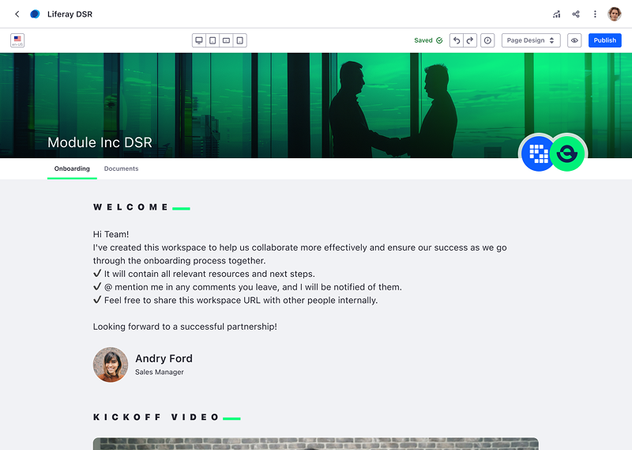
- 邀请客户。在房间中，邀请 Sophie Martin（练习 7.3 中创建的 Novacorp 用户）作为参与者。如果不发出邀请，下面的验证就没有可以登录的用户：仅仅是 Novacorp 账户的成员，本身并不能获得房间的访问权限。
✅ 验证：以另一个与 Novacorp 关联的非管理员用户（Sophie Martin 或受邀的相关方）身份打开新创建的房间，确认其可以看到房间及其共享文档。管理员创建的流程证明了配置可行 — 而第二项检查才证明真正的销售人员到客户的旅程是可行的。
8.2 — 从原生到定制：由已保存的模拟生成的房间
🎯 将 Solar + Battery Simulator（6.1）变成销售对话的起点。使用公司账户登录的客户在公开页面上运行一次模拟，并点击 Save your simulation。随后 Liferay 会根据定制的 "Aurelis — Solar + Battery Proposal" 模板为该账户创建一个 Digital Sales Room。房间中有一个 Simulation 选项卡，打开时即显示客户自己的数据，客户和其 Aurelis 销售人员可以在那里一起调整。
🧩 manage-dsr 🆕、manage-objects、manage-roles-permissions、scaffold-fragment、scaffold-client-extension（customElement 和 objectAction）、setup-oauth、manage-object-logic、browser-verify。
📎 CSF-05（顺畅的协作式销售）；REQ-28、REQ-29（Digital Sales Room）；REQ-63–REQ-66（模拟器）。
📖 8.1 由销售人员发起；本练习由客户发起。在 8.1 中，销售人员在向导中手动开设房间。这里则由客户自己的操作开设房间，且他们产生的数据已在其中。DSR 的三个特性使之成为可能，manage-dsr 技能对每一项都有说明：
- 房间是一个对象条目。每个房间都是系统对象
DSRRoom的一个条目，向/o/digital-sales-room/rooms提交一个条目即可创建房间及其站点。向导本身也是这样做的。headless-dsr没有"创建房间"端点，只有复制、成员和邀请。 - 房间模板是一个 Site Template，通过条目的
siteTemplateKey字段中的 UUID 引用。向导会列出实例中所有的 Site Template，因此定制模板也会出现在其中，供手动创建房间的销售人员使用。 - 房间是一个站点，因此可以保存站点范围的数据。站点范围的对象为每个房间存储一个条目。模板中放置的模拟器从当前站点读取"本房间的模拟"，页面中无需任何 id。
📖 为什么其他一切都是 Client Extension，而模板却是 OSGi 模块。Liferay 没有提供创建 Site Template 的 REST 端点。siteInitializer Client Extension 也无法以其为目标，因为模板的组不是站点，该 CX 使用的端点会拒绝它。而通过导出/导入将站点页面复制到模板中，会因 LARTypeException 而失败。因此，模板的打包方式与 Liferay 打包其自身 DSR 模板的方式相同：
- 一个 OSGi 模块携带一个站点初始化程序目录树，由 bundle 头
Liferay-Site-Initializer-Name将其注册为站点初始化程序； - 一个小组件创建一个具有固定 UUID 的 Site Template，并将该目录树应用到其上。
代价：这在无法部署模块的 Liferay SaaS 上无法运行。在那里，模板需要手动创建。
⚠️ 前提条件：已完成 8.1（DSR 已激活）、6.1 中的模拟器，以及 7.3 中作为 Novacorp 账户成员的 Sophie Martin。请保留一个空闲的终端：第 3 步中创建房间的微服务以本地 Node 进程方式运行。
📋 1. 房间模板。
💬 提示词：
Using manage-dsr, package a custom Digital Sales Room template as an OSGi
module in modules/aurelis-dsr-solar-template, the way DSR packages its own:
- The module carries a site-initializer tree. Start from the tree of the
"Digital Sales Room" initializer (the room template, not the "DSR"
initializer that builds the management screens), copied from the
com.liferay.digital.sales.room.site.initializer jar inside the DSR Impl
lpkg. Keep its Onboarding, Documents and Login pages and its
digital-sales-room-master master.
- Add a fourth page, Simulation (/simulation), on that master, with a short
intro and the simulator: copies of the 6.1 simulator fragments in their own
collection, since fragment keys are per site.
- A component creates the Site Template "Aurelis — Solar + Battery Proposal"
with the fixed UUID AURELIS_DSR_SOLAR_TEMPLATE where DSR is deployed, and
re-applies the tree whenever the module is redeployed.
Then create one room over REST with that template for Novacorp, check it has
the four tabs, and delete it.
Access expectations: none of the template's pages may be visible to Guest.
✅ 日志显示 Applied com.aurelis.dsr.solar.template … to Site Template AURELIS_DSR_SOLAR_TEMPLATE。该模板出现在 Digital Sales Room Management → New Digital Sales Room → Choose a template 中，位于默认模板旁边。
📸 截图：向导的模板步骤，已选中 "Aurelis — Solar + Battery Proposal" 并显示其预览。

📋 2. 保存模拟。
💬 提示词：
Using manage-objects, create a site-scoped SolarSimulation object, related
oneToMany from Account (relationship accountToSolarSimulations) and Account
Restricted on that relationship. Fields: address (Text), latitude, longitude,
surfaceM2 (Decimal), hourlyConsumptionKwh (LongText, a JSON array of 24
numbers), and for the room round trip roomId, roomSiteId, sourceSimulationId
(LongInteger) and roomURL (Text).
Using scaffold-client-extension, add a third simulator widget,
aurelis-simulator-save, coupled to the inputs widget only through
Liferay.on('aurelisSimulatorInputsChanged') and
Liferay.fire('aurelisSimulatorInputsRequested'), like the results widget:
- mode="create" on the public simulator page: shown only to a signed-in user
who belongs to an Account. "Save your simulation" creates a SolarSimulation
in the current site for that Account, then waits for the entry's roomURL
and shows a link to the room.
- mode="update" on the template's Simulation page: saves the edited inputs
onto the room's own SolarSimulation (the latest of the current site).
Teach aurelis-simulator-inputs to start from saved data: with the attribute
load-scope-simulation, it loads the latest SolarSimulation of the current
site and starts from it. Use that attribute on the template's copy of the
fragment only. Place the save widget under the inputs widget on both pages.
Create Camille Laurent (camille.laurent@aurelis.example), Aurelis's seller,
with the regular DSR Seller role, as a test user.
Access expectations: a signed-in user may create SolarSimulation entries only
for an Account they belong to; Guest gets nothing and sees a sign-in hint
instead of the button; a signed-in user with no Account sees no button.
Inside a room, the members (DSR Room Collaborator and DSR Content
Contributor) can read and update the room's simulation, through grants in
the site initializer's resource-permissions.json. Nobody else can.
📋 3. 创建房间。
💬 提示词：
Using scaffold-client-extension and setup-oauth, build an objectAction
microservice, aurelis-dsr-room-provisioner (Node, no dependencies), attached
to SolarSimulation onAfterAdd. For a simulation saved on the public page:
1. create a Digital Sales Room for the simulation's Account from the template
AURELIS_DSR_SOLAR_TEMPLATE, named "<Account> — Solar + Battery Proposal
#<simulation id>";
2. wait until the room is initialized;
3. copy the simulation into the room's site scope, marked as a copy;
4. add the customer who saved it as DSR Room Collaborator and Camille as
DSR Content Contributor;
5. write roomId, roomSiteId and the room's Simulation page URL back onto the
saved simulation.
Ignore copies, or the action fires on its own copy. Use its own
oAuthApplicationHeadlessServer identity for every call back into Liferay,
with only the scopes it needs. Answer the action's call at once and do the
work afterwards. Start it locally and tell me the command you used.
Access expectations: the customer's own token must not be what creates the
room. Verify the whole journey in a browser with browser-verify, as Sophie
(save, open the room, edit and save there), as Camille (opens the room, sees
Sophie's edit), as a signed-in user outside Novacorp (no button, 404 on the
room) and as Guest (sign-in hint, 404 on the room).
⚠️ 微服务运行在 Liferay 之外。blade gw deploy 会注册 CX 及其 OAuth 应用，但不会启动 Node 进程。这样 Liferay 会调用一个无人监听的端口，保存小部件会一直等待一个永远不会出现的房间。请使用代理给出的命令启动它，并保持其运行。
✅ 验证：
- 以 Sophie 身份：在公开模拟器上定位一个城市，设置面积，然后点击 Save your simulation。几秒钟内会出现链接 "Open your Digital Sales Room"。房间打开时位于 Simulation 选项卡，Sophie 的地址、面积和用电曲线均已加载。修改面积，点击 Save changes，重新加载：新值保持不变。
- 以 Camille 身份：打开房间的链接（保存小部件向 Sophie 显示的 URL）：其 Simulation 选项卡显示 Sophie 的最新数值，Camille 也可以保存更改。
- 以其他任何人身份：Novacorp 以外的已登录用户看不到保存按钮，访问房间时得到
404；访客也是如此，看到的是登录提示而不是按钮。 - 数据：Aurelis 站点中已保存的模拟保留原始数值，并带有房间的 URL；房间自己的副本则带有修改。两个条目，两个范围：公开记录保持客户提交时的样子，房间则保存工作版本。
📸 截图：保存后的公开模拟器，带有指向房间的链接；房间的 Simulation 选项卡，已加载保存的数据。


第 9 级 — 从原生到定制：手工构建的聊天机器人小部件（Client Extensions、AI Hub、Segments、LDP）
练习 7.2–7.3 已经搭建了一个范围设置得当的聊天机器人。本级展示定制构建的小部件能在其之上叠加哪些原生 Click to Chat 无法实现的能力：实时细分上下文，以及在对话中捕捉购买意向信号。
9.1 — 带实时细分上下文的定制小部件
🎯 一个自挂载的聊天气泡 Client Extension，它直接调用 AI Hub 自身的聊天机器人 REST API，并注入"访问者已经阅读过某份特定白皮书"这一事实。
🧩 scaffold-client-extension（自挂载 customElement 变体）、react-custom-elements、manage-ai-hub 🆕、manage-analytics 🆕
📖 您将用自己的聊天气泡替换原生 Click to Chat 气泡，它仍然与同一个 AI Hub 聊天机器人通信。自行构建可以带来原生集成无法提供的两点：聊天机器人知道访问者在站点上已经做过什么（这里是阅读过某份白皮书），从而可以调整回答；并且每一次交流都会在 Analytics 中被跟踪，使对话成为可衡量的购买意向信号。
📋 步骤：
- 为 Aurelis 站点关闭 Click to Chat。Site Menu → Configuration → Site Settings → Click to Chat → 关闭 Enable Click to Chat → Save。否则每个页面都会显示两个聊天气泡：练习 7.2 中的原生气泡和您的气泡。如果您在 7.2 中使用的是片段替代方案，请将该片段从其页面中移除。聊天机器人本身在 AI Hub 中保持不变：您的小部件与同一个聊天机器人通信。
- 记下您的聊天机器人自己的 ERC。在 AI Hub → Chatbots → 您在练习 7.2 中构建的聊天机器人中，找到其 External Reference Code。它就是您在 Click to Chat 中填写为 Chat Provider Account ID 的值（练习 7.2，第 8 步）。请把它记下来 — 下面的小部件直接与聊天机器人自身的 API 通信，因此它发出的每一个调用（获取配置、订阅聊天、发送消息）都需要指向这个确切的聊天机器人，而不能留给代理去猜测或编造。
- 创建实时细分。在 Liferay Data Platform 的 Segments 管理界面中，创建一个 Member Segment，匹配经历过练习 4.1 漏斗的访问者。LDP 的编辑器称之为 Individuals Segment（实时）。其条件：Individual has triggered
whitePaperDownloaded_<your initials>at least 1 time in the last 1 days — 使用您自己在练习 4.1 和 4.2 中带姓名缩写后缀的事件，切勿使用不带后缀的名称或其他学员的事件，因为所有学员共享这个 LDP 工作空间。为其填写 Title/Description，然后打开该细分自己的 External Reference Code 字段，将其修改为您能真正认出的值 — 例如带有您自己姓名缩写的whitepaper-readers-abc— 而不是保留自动生成的值。ERC 字段只接受小写字母和连字符，不接受大写字母或下划线。这个工作空间是共享的，随机自动生成的 ERC 很容易被弄丢或与其他学员的混淆；请记下您选择的值，下面会用到。
📸 截图：细分的详情界面，显示其（已重命名的）ERC。

- 构建小部件。一个单例、自挂载的
customElementClient Extension（聊天气泡样式），复刻原生聊天机器人自身的 API 调用（获取配置、chats/subscribeSSE、POST .../messages— 依照manage-ai-hub），而不是使用原生 Click to Chat。从一开始就在消息 POST 上实现 "Cell" 代表用户（on-behalf-of）授权层 — 它是通过特性检测启用的，实际上并非可选：跳过它会使每条消息都以匿名方式发送；如果聊天机器人的 Search Blueprint 从访客无法查看的内容中检索，检索会静默地返回空结果，看起来与"小部件坏了"毫无区别。 - 附加细分上下文。在客户端调用
Analytics.segment.getRealTimeSegmentExternalReferenceCodes()— 它返回一个 Promise，解析为访问者当前所属实时细分 ERC 的数组。硬编码一个映射，将第 2 步中的真实 ERC 映射到一段描述（"has already read Aurelis' Novacorp white paper on solar and GridMax energy storage"）。当访问者的 ERC 匹配时，在发往 AI Hub 的每条消息中附带该描述，放在消息的context对象中、键名为visitorContext（无匹配细分时为空字符串），切勿放在消息文本中。 - 跟踪每一次响应。实际捕获的流中不只有
manage-ai-hub中记录的两个具名事件 — 其中还充斥着: heartbeat注释行，以及代理内部工作流运行时每轮产生的多个中间event: <nodeName>消息（例如event: liferaySearch，或直接以某个节点 UUID 命名的事件），每个都携带部分或重复的{"nodeName", "data", "type"}载荷。这些都不是最终答案 — 只将Analytics.track()绑定到该轮流的终止事件：Chat Message Sent（成功 — 唯一携带agentDefinitionExternalReferenceCodes的事件）或Agent Invocation Failed/连接error（失败）。如果改为在每个具名事件上触发，一次实际回复就会记录多个重复的"成功"事件。对传给Analytics.track()第二个参数的内容进行清理 — 它只接受字符串/数字/布尔值，且上限为 1024 个字符；直接传入原始数组（例如agentDefinitionExternalReferenceCodes）或超长字符串，会从 SDK 中直接抛出未捕获的异常。
💬 提示词（替换为您在第 1 步中的聊天机器人 ERC 和第 2 步中的细分 ERC）：
Build a self-mounting, singleton customElement Client Extension (chat-bubble style) that talks directly to AI Hub's own chatbot REST API — config fetch,
chats/subscribe SSE stream, POST .../messages — using the confirmed pattern
in the manage-ai-hub skill, instead of Liferay's native Click to Chat
integration (it is turned off for this site). My chatbot's own External Reference Code is
"<your Chatbot's real ERC>" — use it for every one of these calls, don't
invent or guess a different one.
Implement the "Cell" on-behalf-of authorization layer (postAuthorizationToken
in the confirmed pattern) and attach its headers to at least the message POST
from the start, not as an afterthought — it's feature-detected, not skippable
in effect: an anonymous message POST against a permission-scoped Search
Blueprint silently retrieves nothing, which looks identical to "the widget is
broken" with no error anywhere.
Client-side, call Analytics.segment.getRealTimeSegmentExternalReferenceCodes()
— it returns a Promise resolving to an array of the visitor's current
real-time Segment ERCs — and check the result against this hard-coded map:
{"<your Segment's real ERC>": "has already read Aurelis' Novacorp white
paper on solar and GridMax energy storage"}
On every message POSTed to AI Hub, send the matching description in the
message's context object under the key visitorContext, e.g.
"context": {"visitorContext": "has already read Aurelis' Novacorp white
paper on solar and GridMax energy storage"}, or an empty string when no segment matches. Never
append it to the message text: the context keys bypass the chatbot's
Supervisor and reach the agent's workflow directly.
The SSE stream fires several intermediate "event: <nodeName>" messages per
turn before the real answer (e.g. "event: liferaySearch", or an event named
after a workflow node's own UUID), plus ": heartbeat" comment lines — ignore
all of those for tracking purposes. Only fire Analytics.track() on the
stream's terminal event for that turn: one custom event (e.g.
chatbotResponseReceived) carrying real metadata from the SSE payload (e.g.
agentDefinitionExternalReferenceCodes) when the terminal event is "Chat
Message Sent", and a distinct custom event (e.g. chatbotResponseError) when
it's "Agent Invocation Failed" — or a generic connection error — instead.
Never fire the success event for a manifest chatbot error, and never fire
more than one tracked event for a single reply. Analytics.track() only
accepts string/number/boolean property values capped at 1024 characters, so
sanitize anything forwarded from the SSE payload first (join an array like
agentDefinitionExternalReferenceCodes into a string, stringify any object,
truncate long strings) — passing a raw array or an over-length string
straight through throws an uncaught exception from inside the SDK.
📋 然后，在 AI Hub 控制台中（GUI 编辑，而非提示词）：更新 7.2 中的 Answer Builder 代理，使其读取新的 visitorContext 键。所有修改都在其 LLM 节点上，代理定义不做任何修改：
- 保持代理定义的 Input Variables 不变（
originalRequest,gatheredInformation）。不要在那里添加visitorContext：这些变量由 Supervisor 填充，它从不会看到context键，并会用空字符串覆盖真实值。 -
Agent Builder → Answer Builder 代理 → Edit Workflow → 选择 LLM 节点：
- Input Variables：添加
visitorContext：[{"name": "originalRequest", "type": "string"}, {"name": "gatheredInformation", "type": "string"}, {"name": "visitorContext", "type": "string"}]。 - User Message：将其注入：
Original user request:\n{{originalRequest}}\n\nGathered information:\n{{gatheredInformation}}\n\nWhat we know about this visitor:\n{{visitorContext}}。
- Input Variables：添加
-
在同一节点中，扩展其 Prompt：
The user message may include a "What we know about this visitor" section. If
it says the visitor has already read a specific Aurelis white paper, treat
that as established context: acknowledge it briefly, then build on it — move
straight to a concrete next step instead of re-explaining the basics. If that
section is empty, answer normally.
对于不在该细分中的访问者，visitorContext 为空，该部分保持空白，代理会像以前一样回答。
💡 上下文如何到达 AI Hub 中的代理。POST 到聊天机器人 API 的消息携带两样东西：访问者的文本，以及一个可选的 context 对象。两者的传递方式并不相同：
- 文本发送给聊天机器人的 Supervisor，由它作为
request传递给它选中的代理。Supervisor 可能会改写文本，而且文本是 Supervisor 进行路由的唯一依据。写进文本中的上下文（例如问题前面的[CONTEXT]块）可以生效，但它也会进入 Supervisor 的聊天记忆，每次复制都会使其增长，且每轮都会被摘要，因此每一轮都会变得更慢。 context键绕过 Supervisor：它从不会看到这些键，因此既不能改写它们，也不能根据它们路由。它们直接进入被调用代理的工作流上下文，工作流节点可以原样读取。
使用 context 时，由此得出两条规则：
- 将每个键声明为使用它的工作流节点上的 Input Variable（即 LLM 节点），切勿在代理定义的 Input Variables 中声明。代理定义的变量是由 Supervisor 填写的参数，而它只知道访问者的文本：同时列在那里的键会从 Supervisor 得到一个空字符串，从而覆盖真实值。
- 保持上下文精简。它在每一轮都会被发送，而代理自身的 LLM 仍会读取其提示词所引用的全部内容。在一个表单填写聊天机器人上，当文本后附加 3,500 个字符的页面状态时，一轮耗时约 40 秒；不附加任何内容时为 12–17 秒。只发送代理真正用到的内容，并将固定指令在提示词中一次性说明，而不是在每条消息中重复。
这就是本练习将细分描述作为 context 键 visitorContext 发送的原因：它在 Answer Builder 的 LLM 节点上声明，并注入其 User Message，而不是放在消息文本中。
✅ 验证：将该 Client Extension 标签放置一次（例如放在母版页上），加载两个不同的页面，确认两个页面上出现的是同一个小部件，并且它是页面上唯一的聊天气泡（没有残留的 Click to Chat 气泡）。进行一次完整、成功的对话，确认每次响应恰好产生一个带有真实元数据的成功 Analytics.track() 事件。再以两个不同的访问者身份各进行一次对话 — 一个属于该细分，一个不属于 — 确认回复明显不同（属于该细分的访问者得到的回复应主动提及白皮书）。然后强制制造一次失败（例如发送格式错误的请求，或暂时禁用已分配的代理），确认触发的是独立的聊天机器人错误事件而非成功事件 — 既不是两者都触发，也不是两者都不触发。
9.2 — 在对话中检测购买意向
🎯 扩展同一个小部件和同一个代理，使对话中出现的组合产品意向信号成为一个可跟踪的事件，而不是在聊天结束时消失。
🧩 scaffold-client-extension（扩展 9.1 的小部件 — 不新建 Client Extension）、manage-ai-hub 🆕、manage-analytics 🆕
📖 页面访问或表单提交只能告诉您发生了某件事。对话则能告诉您更多：一个询问太阳能电池板与储能电池如何协同工作的访问者，正在表现出对组合方案的真实兴趣。在这里，您让代理在回复中悄悄标记这一时刻，小部件则将其转换为一个列出相关产品的 Analytics 事件，供市场和销售团队据此采取行动。
📋 1. AI Hub 控制台 — 再次扩展 Answer Builder。两处修改，都针对 7.2 和 9.1 中的 Answer Builder。
a. 其 LLM 节点的 Prompt — 追加：
Answer the visitor normally first. Separately, if — and only if — the
conversation shows the visitor is specifically interested in combining two
or more Aurelis product lines (for example solar panels with battery
storage), append this exact block on its own line at the very end of your
reply, after the conversational answer, with the actual product lines
substituted in:
[[INTEREST:{"products":["Solar","GridMax"]}]]
Only include this block when genuine combined-product interest is clearly
expressed. Never mention this block to the visitor, never explain what it's
for.
b. 代理定义的 Description — 在现有描述后追加这句话：
Its output is read by a program: return it to the visitor verbatim, without
rewording, summarizing or removing anything, including any trailing
[[INTEREST:...]] line.
⚠️ 为什么要修改 Description，而不仅仅是节点的 Prompt。访问者从不会直接得到 Answer Builder 的输出：聊天机器人的 Supervisor 会转发它，并可能改写该输出，丢掉它认为是噪声的标记。Supervisor 从不读取节点的 Prompt，只读取各代理的 Description，因此"原样返回"规则必须写在那里。这能降低风险，但无法消除风险：这是给 LLM 的指令，而不是保证，这也是下面的验证要检查原始流的原因。
💬 2. 小部件修改 — 给编码代理的提示词。与第 1 步不同，这一步不是在 AI Hub 中输入的。请在本工作区中将其交给 Claude Code（或您使用的其他编码代理）：它会更新您在 9.1 中构建的定制聊天气泡 Client Extension 的代码，使小部件能够识别代理现在添加的标记，对访问者隐藏该标记，并将其转换为 Analytics 事件。
Extend the chat-bubble customElement Client Extension built earlier
so it also recognizes a [[INTEREST:{...}]] marker anywhere in an assistant
response:
strip that marker, and the line it's on, from the text before rendering the
reply to the visitor, parse the JSON it contains, and fire a second, distinct
Analytics.track() call carrying that parsed payload — separate from the
per-response tracking call already in place. If no marker is present, render
the reply exactly as before.
✅ 验证：只询问一条产品线 — 不触发意向事件，也看不到多余的标记文本。询问两条产品线的组合 — 确认面向访问者的回复中没有任何标记语法的痕迹，恰好额外触发一个带有正确产品列表的 Analytics.track() 事件（直接在浏览器的开发者工具中检查），并且该事件确实出现在 Liferay Data Platform 中，而不只是出现在发出的请求里。
如果组合产品问题没有触发意向事件，请在修改提示词之前先找出标记是在哪里丢失的。在 DevTools 中打开 chats/subscribe 流（Network → EventStream），比较该轮的两个事件：Answer Builder LLM 节点自身的事件，以及 Chat Message Sent。如果标记出现在节点的事件中，但不在 Chat Message Sent 中，说明是 Supervisor 删除了它：收紧第 1b 步中的 Description。如果节点的事件中也没有标记，说明是 LLM 没有添加：重新编写第 1a 步中的 Prompt。
附录 — 完整截图检查清单
如果您正在准备本教程的录制演示或书面报告，可以将此作为拍摄清单。
| # | 练习 | 截图 |
|---|---|---|
| 1 | 0.2 | ngrok 终端在线，且有请求通过隧道 |
| 2 | 1.2 | Feature Flags 面板，已启用四个功能标志 |
| 3 | 1.4 | Instance Configuration → General，具有唯一名称，并将 Aurelis 设为主页/登录后页面/注销页面 |
| 4 | 2.1 | Account 对象定义的字段列表，包含新的自定义字段 |
| 5 | 2.2 | Lead 和 AccountIntelligenceProfile 对象定义，及其与 Account 的关系 |
| 6 | 2.4 | Lead 的 Object Action 及其 Notification 模板 |
| 7 | 3.1 | 四个 CMS Spaces 及其结构和内容 |
| 8 | 3.3 | AI Hub Configurations 界面 + DXP AI Hub 连接界面 |
| 9 | 3.4 | 被邀请到 White Papers Space 的用户；两项任务均已分配的 CMP 活动看板 |
| 10 | 4.1 | 列表页面 → 受限条目 → 完整文章 → LDP 事件 |
| 11 | 4.2 | 已保存的 Event Analysis 配置；下载的包含真实数据行的 Event Analysis Report |
| 12 | 4.3 | 已排序的线上页面；Page Editor 中显示 Data Set 已被选中（由站点初始化程序配置） |
| 13 | 4.4 | 处于编辑模式的账户详情应用 |
| 14 | 5.1 | 公司注册信息查询成功后的合作伙伴表单 |
| 15 | 6.1 | 绘制了用电曲线的输入小部件；两个月的结果图表 |
| 16 | 7.2 | Search Blueprint 配置；Search Worker 和 Answer Builder 的定义与工作流；Chatbot Assigned Agents 界面 |
| 17 | 7.2 | 在 Instance Settings 中启用的 Click to Chat；站点的 Click to Chat 设置，包含 AI Hub 和聊天机器人 ERC |
| 18 | 7.3 | 账户信息代理定义；其 HTTP Request 和 LLM 节点；带有已授予范围的 AI Hub Cell Scopes 选项卡 |
| 19 | 8.1 | DSR 已激活；New Digital Sales Room；选择账户；选择模板；命名；已配置的房间工作空间 |
| 20 | 8.2 | 包含定制模板的向导模板步骤；保存后带有房间链接的公开模拟器；已加载保存数据的房间 Simulation 选项卡 |
| 21 | 9.1 | 显示其 ERC 的细分详情界面 |
更进一步 — AI Hub 快速入门
要进一步了解 AI Hub 以及如何将其用于具体用例，请参阅 AI Hub 快速入门：https://github.com/fabian-bouche-liferay/ai-hub-quick-start。每个快速入门都是围绕一个真实场景构建的分步指南，内容超出了本练习手册的范围。